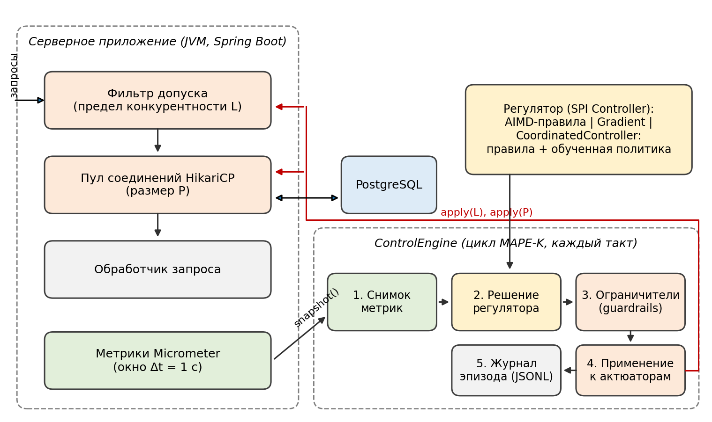
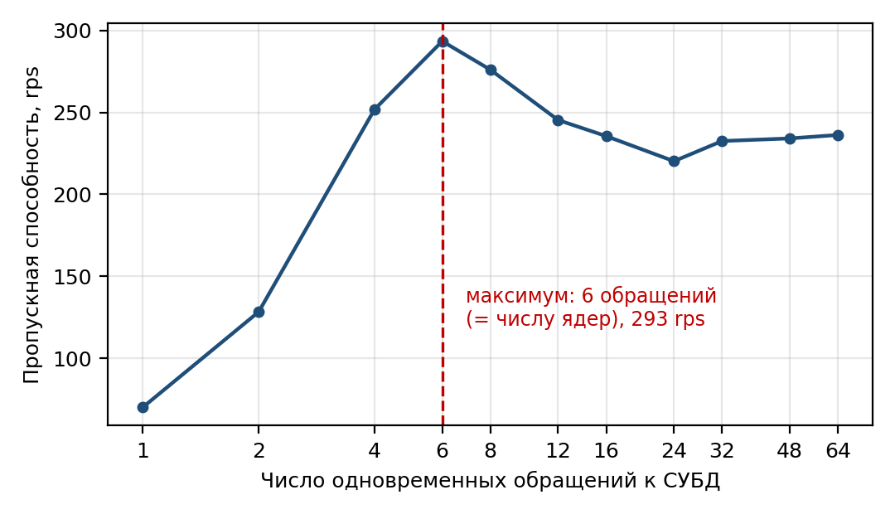
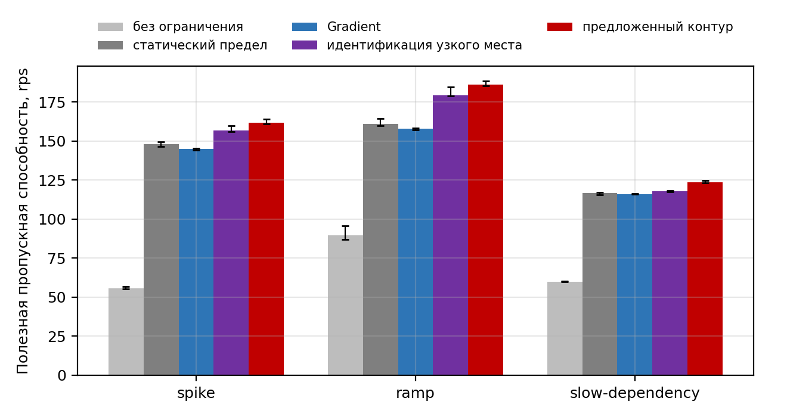
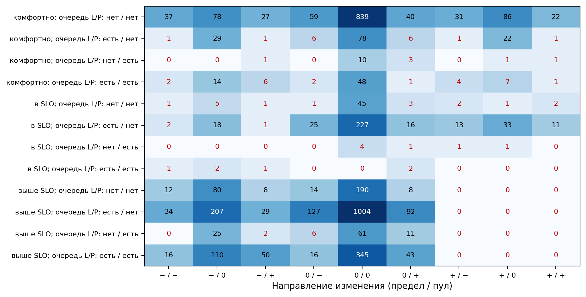
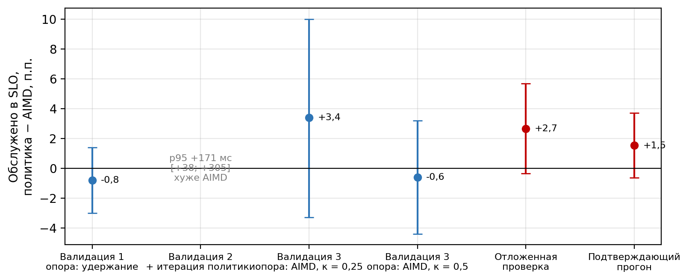
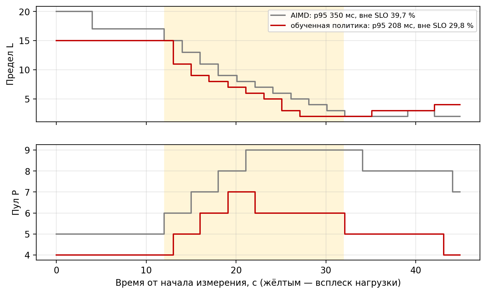
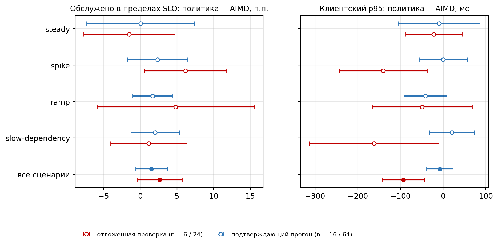

Министерство науки и высшего образования Российской Федерации
Федеральное государственное бюджетное образовательное учреждение высшего образования
«Ивановский государственный химико-технологический университет»
Кафедра [наименование кафедры]
ВЫПУСКНАЯ КВАЛИФИКАЦИОННАЯ РАБОТА
(магистерская диссертация)
на тему:
«Интеллектуальное согласованное управление мягкими ресурсами серверного приложения на основе обучаемой политики»
Направление подготовки [код и наименование направления]
Магистерская программа [наименование программы]
Выполнил: студент группы [номер]
______________ А.Н. Бобков
Руководитель: [учёная степень, звание, должность]
______________ [И.О. Фамилия]
Допущена к защите. Заведующий кафедрой
______________ [И.О. Фамилия]
Иваново 2026
Выпускная квалификационная работа содержит 54 с., 7 рис., 20 табл., 46 источников, 4 прил.
МЯГКИЕ РЕСУРСЫ, СОГЛАСОВАННОЕ УПРАВЛЕНИЕ, ПРЕДЕЛ КОНКУРЕНТНОСТИ, ПУЛ СОЕДИНЕНИЙ, ОБУЧЕНИЕ С ПОДКРЕПЛЕНИЕМ, ИТЕРАЦИЯ АППРОКСИМИРОВАННОЙ Q-ФУНКЦИИ, БЕЗОПАСНОЕ УЛУЧШЕНИЕ ПОЛИТИКИ, SLO, POSTGRESQL, SPRING BOOT
Объект исследования — серверное приложение на платформе JVM, обслуживающее поток запросов и использующее реляционную СУБД.
Цель работы — разработка метода и программных средств согласованного управления мягкими ресурсами серверного приложения на основе политики, обучаемой по журналу работы управляющего контура, и экспериментальная оценка её эффективности относительно настроенного базового регулятора.
В работе предложено единое описание мягкого ресурса и пространство согласованных относительных действий, учитывающее слой ограничений; метод обучения политики по фиксированному набору данных — итерация аппроксимированной Q-функции на ансамблях деревьев с разложением на ценность состояния и преимущество действия; правило принятия решения, при котором политика отступает от предложения базового регулятора только при положительной нижней доверительной границе преимущества. Метод реализован в библиотеке IASR для JVM с автоконфигурацией Spring Boot и конвейере обучения на Python.
Экспериментальное исследование на стенде с PostgreSQL показало, что обученная политика работает в замкнутом контуре как режим библиотеки (решение до 4,4 мс); ухудшения относительно базового регулятора AIMD на двух отложенных условиях не обнаружено. На первом из них политика значимо снизила p95 задержки на 93 мс и долю ответов вне SLO на 6,4 п.п.; доля нагрузки, обслуженной в пределах SLO, выросла на 2,7 п.п. (не значимо). В подтверждающем прогоне с заранее заданным критерием (64 пары) разность составила +1,5 п.п. [−0,6; +3,7]; превосходство обученной политики по основному показателю не установлено.
Область применения — серверные приложения на JVM, использующие пулы соединений с базой данных и ограничение конкурентности.
ВВЕДЕНИЕ
ГЛАВА 1. АНАЛИЗ ПРЕДМЕТНОЙ ОБЛАСТИ
1.1. Мягкие ресурсы серверного приложения
1.2. Адаптивное ограничение конкурентности и выбор размера пула соединений
1.3. Самоадаптивные системы и управление с обратной связью
1.4. Обучение с подкреплением в управлении ресурсами
1.5. Обучение с подкреплением по фиксированному набору данных и безопасное улучшение политики
1.6. Сравнительный анализ и постановка задачи исследования
Выводы по главе 1
ГЛАВА 2. МОДЕЛЬ И МЕТОД СОГЛАСОВАННОГО УПРАВЛЕНИЯ МЯГКИМИ РЕСУРСАМИ
2.1. Объект управления и формальная постановка задачи
2.2. Базовый регулятор и слой ограничений
2.3. Единое описание мягкого ресурса и пространство согласованных действий
2.4. Постановка задачи обучения
2.5. Метод обучения: итерация аппроксимированной Q-функции с разложением
2.6. Правило принятия решения: безопасное улучшение базового регулятора
2.7. Сбор данных и итерация политики
2.8. Обоснование выбора по результатам прототипа
Выводы по главе 2
ГЛАВА 3. АРХИТЕКТУРА И ПРОГРАММНАЯ РЕАЛИЗАЦИЯ
3.1. Требования и общая структура
3.2. Управляющий контур и интерфейсы расширения
3.3. Контракт метрик
3.4. Единое описание ресурса и пространство действий в ядре
3.5. Журнал эпизода
3.6. Согласованная обученная политика в JVM
3.7. Включение политики в Spring Boot
3.8. Конвейер обучения
3.9. Проверка корректности реализации
Выводы по главе 3
ГЛАВА 4. ЭКСПЕРИМЕНТАЛЬНОЕ ИССЛЕДОВАНИЕ
4.1. Экспериментальный стенд и методика
4.2. Показатели
4.3. Результаты базового регулятора и прототипа обучаемой политики
4.4. Обучение согласованной политики и выбор правила решения
4.5. Отложенная проверка
4.6. Оценка мощности и подтверждающий прогон
4.7. Угрозы валидности
4.8. Обсуждение результатов
Выводы по главе 4
ЗАКЛЮЧЕНИЕ
СПИСОК ИСПОЛЬЗОВАННЫХ ИСТОЧНИКОВ
ПРИЛОЖЕНИЕ А. ПАРАМЕТРЫ ЭКСПЕРИМЕНТОВ
ПРИЛОЖЕНИЕ Б. ФОРМАТ ЖУРНАЛА ЭПИЗОДА
ПРИЛОЖЕНИЕ В. ПРАВИЛО ПРИНЯТИЯ РЕШЕНИЯ (ЭТАЛОННАЯ РЕАЛИЗАЦИЯ)
ПРИЛОЖЕНИЕ Г. ВОСПРОИЗВЕДЕНИЕ РЕЗУЛЬТАТОВ
Актуальность темы. Производительность серверного приложения определяется не только объёмом выделенных ему аппаратных ресурсов, но и параметрами, задающими распределение работы внутри процесса: пределом числа одновременно обслуживаемых запросов, размерами пулов соединений и потоков, глубинами очередей. Такие параметры называют мягкими ресурсами [1, 2]. Их значения, как правило, задаются при запуске приложения и не меняются до перезапуска, хотя правильное значение зависит от интенсивности нагрузки и от состояния внешних зависимостей, прежде всего базы данных. Пропускная способность зависимости как функция конкурентности унимодальна [3]: недостаточный пул соединений создаёт очередь при простаивающей базе, избыточный — переносит очередь внутрь СУБД и увеличивает время обслуживания. При пиковой нагрузке или деградации зависимости статически выбранное значение оказывается неверным именно тогда, когда от него больше всего зависит качество обслуживания.
Промышленные средства адаптивного управления — алгоритмы библиотеки Netflix concurrency-limits [4], фильтр адаптивной конкурентности Envoy [5] — управляют одним мягким ресурсом, пределом конкурентности, а размер пула соединений по-прежнему выбирается статически по эмпирическим рекомендациям [6]. Мягкие ресурсы одного приложения при этом связаны: предел конкурентности определяет поток запросов к пулу, а размер пула — поток запросов к базе данных. Раздельное управление ими приводит к тому, что регуляторы компенсируют ошибки друг друга. Предварительное исследование автора показало, что разрешение управляющему контуру изменять пул соединений вместе с пределом конкурентности увеличивает полезную пропускную способность на 6–18 % при одновременном сокращении хвоста задержки на реальной СУБД.
Правила такого согласованного управления формулируются вручную, а их коэффициенты подбираются измерением. Чувствительность к коэффициентам велика, а способа вывести их аналитически для нестационарного, частично ненаблюдаемого объекта нет. Естественное развитие — заменить или дополнить правила политикой, обучаемой по данным о работе системы, в духе классической постановки адаптации и обучения в автоматических системах [7, 8]. Методы обучения с подкреплением применялись к управлению ресурсами [9–11], однако их перенос в реальные системы затруднён: исследовать случайные действия в работающей системе нельзя, данных мало, решения должны приниматься за миллисекунды, а ухудшение относительно проверенных правил недопустимо [12]. Методы обучения по фиксированному набору данных и безопасного улучшения базовой политики [13, 14] отвечают этим требованиям, но к согласованному управлению мягкими ресурсами серверного приложения не применялись. Этим определяется актуальность темы.
Степень разработанности темы. Адаптивное ограничение конкурентности хорошо разработано в промышленной практике и опирается на результаты теории управления перегрузкой в сетях [15–17]. Влияние распределения мягких ресурсов на производительность многоуровневых приложений систематически исследовано в работах группы Q. Wang [1, 2, 18], где предложены правила согласования потоков и соединений с горизонтальным масштабированием. Теоретическая основа самоадаптивных систем и применения теории управления к программному обеспечению изложена в работах [19–21]. Методы offline-обучения с подкреплением — итерация аппроксимированной Q-функции на ансамблях деревьев [22, 23], ограничение распределения действий [24, 25], безопасное улучшение политики [14, 26] — развиты в общем виде. Вопрос о том, как встроить обучаемую политику в управляющий контур мягких ресурсов так, чтобы она не ухудшала проверенные правила там, где у неё нет данных, и как экспериментально оценить её вклад, в литературе не рассмотрен.
Цель работы — разработка метода и программных средств согласованного управления мягкими ресурсами серверного приложения на основе политики, обучаемой по журналу работы управляющего контура, и экспериментальная оценка её эффективности относительно настроенного базового регулятора.
Для достижения цели решены следующие задачи:
1) анализ существующих подходов к управлению мягкими ресурсами и методов обучения с подкреплением, применимых к этой задаче;
2) формализация задачи согласованного управления мягкими ресурсами как задачи последовательного принятия решений с безразмерным критерием качества;
3) разработка единого описания мягкого ресурса и пространства согласованных действий, общих для базового регулятора, сбора данных и обученной политики;
4) разработка метода обучения согласованной политики по фиксированному набору данных и правила принятия решения, обеспечивающего совпадение с базовым регулятором при недостатке данных;
5) программная реализация метода в виде библиотеки для JVM с автоконфигурацией Spring Boot и конвейера обучения;
6) экспериментальное исследование на стенде с СУБД PostgreSQL с разделением условий на обучающие, валидационные и отложенные и с заранее фиксируемыми планами проверки.
Объект исследования — серверное приложение на платформе JVM, обслуживающее поток запросов и использующее реляционную СУБД.
Предмет исследования — методы и алгоритмы согласованного управления мягкими ресурсами (пределом конкурентности и пулом соединений) серверного приложения во время его работы.
Методы исследования. В работе использованы методы теории управления и теории массового обслуживания, теория марковских процессов принятия решений и обучения с подкреплением, методы машинного обучения (ансамбли чрезвычайно рандомизированных деревьев), методы объектно-ориентированного проектирования, планирования эксперимента и математической статистики (парные доверительные интервалы, оценка мощности критерия).
Научная новизна работы состоит в следующем.
1) Предложено единое описание мягкого ресурса через ёмкость и четыре сигнала использования (занятость, очередь, ожидание, удержание) и построенное на нём пространство согласованных относительных действий, учитывающее слой ограничений. В отличие от известных решений, где согласование реализуется правилами для конкретной пары ресурсов, оно позволяет одной обучаемой политике, процедуре сбора данных и базовому регулятору работать с произвольным набором мягких ресурсов и гарантирует совпадение предложенного политикой действия с применённым.
2) Разработан метод обучения согласованной политики управления мягкими ресурсами по фиксированному набору данных, сочетающий итерацию аппроксимированной Q-функции с описанием действия через получаемую конфигурацию ресурсов и разложением Q = V + A на двух ансамблях деревьев. Показано, что без такого разложения оценки действий в одном состоянии практически неразличимы.
3) Предложено правило принятия решения, в котором обученная политика отступает от предложения базового регулятора только при положительной нижней доверительной границе преимущества, вычисляемой по разбросу деревьев ансамбля, — адаптация принципа безопасного улучшения базовой политики к аппроксимации ансамблем деревьев. Экспериментально показано, что выбор предложения базового регулятора, а не удержания ресурсов, в качестве действия по умолчанию определяет качество обученной политики.
4) Получены экспериментальные оценки эффекта обученной согласованной политики относительно настроенного регулятора AIMD на реальной СУБД по заранее фиксируемым планам, включая подтверждающий прогон с критерием, заданным до запуска.
Теоретическая значимость работы состоит в постановке задачи согласованного управления мягкими ресурсами как задачи offline-обучения с подкреплением с безразмерным критерием «доля нагрузки, обслуженной в пределах SLO» и в демонстрации того, как принцип безопасного улучшения базовой политики переносится на непрерывное признаковое пространство с аппроксимацией ансамблем деревьев.
Практическая значимость. Разработана библиотека IASR для приложений на JVM, в которой согласованное управление пределом конкурентности и пулом соединений HikariCP, а также обученная политика включаются свойствами конфигурации Spring Boot. Библиотека пишет журнал работы контура, пригодный для обучения, и сопровождается конвейером обучения, инструментом воспроизводимого запуска экспериментов на временном кластере PostgreSQL и средствами парного сравнения режимов. Методика экспериментальной проверки — открытый цикл нагрузки, чередование режимов, отрицательный контроль, парные интервалы и заранее фиксируемые планы — применима к сравнению любых регуляторов мягких ресурсов.
Положения, выносимые на защиту.
1) Архитектура согласованного управления произвольным набором мягких ресурсов на основе их единого описания со встраиванием обучаемой политики как режима библиотеки через общий слой ограничений.
2) Метод обучения согласованной политики: итерация аппроксимированной Q-функции с описанием действия через получаемую конфигурацию и разложением Q = V + A, решение относительно предложения базового регулятора с нижней доверительной границей преимущества.
3) Результаты экспериментального исследования на PostgreSQL: для обученной политики, решающей относительно предложения AIMD, ухудшения относительно него не обнаружено ни на одном из двух отложенных условий (нижние границы 95 % интервалов −0,4 и −0,6 п.п.), а разность положительна, но статистически не подтверждена по доле обслуженной в SLO нагрузки (+2,7 и +1,5 п.п.); снижение хвоста задержки (p95 −93 мс) получено на одном условии из двух; удержание ресурсов как действие по умолчанию делает обученную политику хуже правил.
Достоверность результатов обеспечивается использованием реальной СУБД вместо синтетической модели зависимости, калибровкой стенда, открытым циклом нагрузки, чередованием режимов и отрицательным контролем, парными доверительными интервалами, разделением условий на обучающие, валидационные и отложенные, фиксацией планов проверки до запуска с записью версии кода и SHA-256 плана, побайтовой воспроизводимостью обучения и совпадением решений JVM с эталонной реализацией. Все данные экспериментов сохранены в репозитории проекта.
Апробация работы. Результаты предварительного этапа исследования изложены в статьях «Координированная адаптация мягких ресурсов серверного приложения: экспериментальная оценка относительно однорессурсных регуляторов» и «Организация нагрузочного эксперимента при сравнении адаптивных регуляторов мягких ресурсов: порядок измерений и отрицательный контроль» (А.Н. Бобков, О.В. Сизова) [сведения о публикации уточнить].
Структура и объём работы. Диссертация состоит из введения, четырёх глав, заключения, списка использованных источников из 46 наименований и 4 приложений. Работа содержит 7 рисунков и 20 таблиц.
В первой главе проанализированы мягкие ресурсы серверного приложения, существующие средства их адаптивного управления, самоадаптивные системы и методы обучения с подкреплением, сформулирована задача исследования. Во второй главе формализована задача, описаны базовый регулятор и слой ограничений, единое описание мягкого ресурса, постановка задачи обучения, метод обучения и правило принятия решения. В третьей главе описаны архитектура и программная реализация библиотеки и конвейера обучения. В четвёртой главе изложены методика и результаты экспериментального исследования, угрозы валидности и обсуждение. В заключении подведены итоги работы.
Производительность серверного приложения зависит не только от выделенных ему процессорных ядер, памяти и пропускной способности сети. Существенную роль играют параметры конфигурации, задающие распределение работы внутри процесса: предел числа одновременно обслуживаемых запросов, размеры пулов соединений с базой данных и пулов потоков, глубины очередей, тайм-ауты ожидания. Эти параметры не добавляют системе вычислительной мощности, но определяют, как она будет использована. В литературе их принято называть мягкими ресурсами (soft resources) в противоположность аппаратным, или жёстким, ресурсам [1, 2].
Отличительная черта мягкого ресурса состоит в том, что его ёмкость технически допускает изменение во время работы процесса, но на практике задаётся при запуске и далее не меняется. Размер пула соединений HikariCP, предел семафора в фильтре допуска, число потоков исполнителя — всё это значения из файла конфигурации, подобранные один раз под ожидаемую нагрузку. Такой подход оправдан, пока нагрузка и свойства внешних зависимостей стационарны. При изменении интенсивности запросов или деградации зависимости правильное значение мягкого ресурса смещается, а сам ресурс остаётся прежним.
Систематические исследования многоуровневых приложений показали, что производительность снижается как при недостаточном, так и при избыточном выделении мягких ресурсов [1]. Недостаточный пул соединений создаёт очередь за соединением при простаивающей базе данных; избыточный пул переносит очередь внутрь СУБД, где конкурирующие запросы увеличивают число переключений контекста, блокировок и промахов кэша. Аналогично предел конкурентности, установленный слишком низко, отклоняет запросы, которые система могла бы обслужить, а установленный слишком высоко пропускает в обработку больше работы, чем зависимость способна выполнить в пределах целевой задержки.
Этот эффект хорошо описывается универсальным законом масштабируемости Гантера, в котором пропускная способность как функция конкурентности сначала растёт, затем выходит на максимум и убывает из-за затрат на согласование и когерентность [3]. Для практической работы важно, что положение максимума не задаётся заранее: оно определяется свойствами зависимости и меняется вместе с ними. Калибровка, выполненная в настоящей работе на реальной СУБД PostgreSQL (раздел 4.1), подтверждает унимодальную форму этой зависимости: пропускная способность достигает максимума при числе одновременных обращений, равном числу выделенных процессорных ядер, и снижается при дальнейшем росте конкурентности. Следовательно, задача выбора значения мягкого ресурса является задачей оптимизации, а не максимизации: стратегия «установить побольше на всякий случай» не оптимальна.
Мягкие ресурсы одного приложения связаны между собой. Запрос сначала получает разрешение фильтра допуска, затем соединение из пула, затем выполняется в базе данных. Предел конкурентности ограничивает поток запросов, поступающий к пулу; размер пула ограничивает поток запросов, поступающий к базе. Если пул мал, увеличение предела конкурентности лишь удлиняет очередь за соединением. Если пул велик, а база перегружена, снижение предела конкурентности оказывается единственным способом удержать задержку. Поэтому значение одного мягкого ресурса нельзя оценить, не учитывая значения другого, и управление ими по отдельности может приводить к тому, что один регулятор компенсирует ошибки другого.
Связанность мягких ресурсов составляет основную мотивацию настоящей работы. Если ресурсы зависят друг от друга, решение об изменении каждого из них должно приниматься с учётом состояния остальных, то есть согласованно.
Отдельно следует отметить связь мягких ресурсов с классической теорией массового обслуживания. Серверное приложение с пулом соединений и базой данных естественно описывается сетью систем массового обслуживания с ограниченным числом приборов [27]. Аналитические модели времени отклика облачных систем [28] и сервера баз данных в технологии «клиент-сервер» [29] показывают нелинейный рост задержки при приближении загрузки к единице и чувствительность результата к закону распределения времени обслуживания. Эти модели объясняют качественное поведение системы, но для управления в реальном времени их параметры должны оцениваться по наблюдениям, а сами модели — допускать нестационарность, которая в практических системах является правилом. Исследования масштабируемости облачных сервисов [30] и моделирование микросервисных систем в контейнерной среде [31] также показывают, что узкое место часто определяется не аппаратными ресурсами, а внутренними ограничениями программных компонентов.
Наиболее развитое направление адаптивного управления мягкими ресурсами — адаптивное ограничение конкурентности (adaptive concurrency limiting). Его задача — определить, сколько запросов допускать к одновременному обслуживанию, чтобы система не переходила в режим перегрузки.
Эталонной реализацией этого подхода является библиотека Netflix concurrency-limits [4]. Она содержит семейство алгоритмов, заимствованных из управления перегрузкой в протоколе TCP. Алгоритм VegasLimit переносит идею TCP Vegas [17] на уровень приложения: он оценивает длину очереди по отношению минимальной наблюдённой задержки к текущей и удерживает её в заданном коридоре. Алгоритмы GradientLimit и Gradient2Limit используют то же отношение как градиент, масштабируя предел пропорционально. Алгоритм AIMDLimit реализует классическое аддитивное увеличение и мультипликативное уменьшение. Важное свойство градиентных алгоритмов состоит в том, что опорной величиной служит наблюдённый минимум задержки, а не заданная извне цель. Это делает их самокалибрующимися: у них нет параметра, который можно выставить неправильно относительно физики системы. Обратная сторона — необходимость периодически перепроверять минимум и управление ровно одной величиной.
Фильтр адаптивной конкурентности прокси-сервера Envoy [5] реализует тот же градиентный подход на уровне сервисной сетки и периодически принудительно снижает конкурентность для повторного замера минимальной задержки. Библиотека Resilience4j [32] предоставляет изоляцию через семафор или пул потоков (шаблон Bulkhead) со статическим пределом. Адаптации в ней нет: значение задаётся конфигурацией и действует до перезапуска. Экспериментальная часть работы показывает, что даже такой статический предел даёт значительную часть выигрыша при перегрузке по сравнению с отсутствием ограничения, и поэтому сравнение адаптивного управления допустимо проводить только с режимом статического предела, а не с режимом без ограничения.
Выбор размера пула соединений с базой данных в промышленной практике решается статически. Рекомендация разработчиков HikariCP [6] состоит в том, чтобы держать пул небольшим и рассчитывать его по числу ядер и дисков сервера баз данных, а не по числу потоков приложения. Эта рекомендация согласуется с законом Гантера, но по построению не учитывает, что оптимальное значение зависит от нагрузки и от текущего состояния зависимости. Когда стоимость запроса к базе меняется — например, при росте объёма данных или конкурирующей нагрузке, — меняется и оптимальный размер пула.
В академической литературе наиболее близкими к теме работы являются исследования группы Q. Wang. Работа [1] систематически исследует влияние распределения мягких ресурсов на масштабируемость многоуровневых приложений в облаке. Система ConScale [18] быстро адаптирует конкурентность компонентов для подавления колебаний времени отклика при масштабировании. Система Sora [2] настраивает мягкие ресурсы микросервисов — пулы потоков и соединений — согласованно с горизонтальным масштабированием, ориентируясь на задержку. Эти работы показывают важность согласования мягких ресурсов, однако сравниваются с системами автомасштабирования и не содержат разделяющего эксперимента, выделяющего вклад управления вторым мягким ресурсом при прочих равных условиях. Кроме того, в них используются правила, а не обучаемые политики.
От адаптивного управления мягкими ресурсами следует отличать автоматическое масштабирование. Горизонтальное масштабирование в Kubernetes изменяет число экземпляров приложения по загрузке процессора или пользовательским метрикам [33], а вертикальное — выделенные экземпляру лимиты процессора и памяти. Эти механизмы управляют жёсткими ресурсами, действуют снаружи процесса на горизонте десятков секунд и минут, требуют запуска новых экземпляров и их прогрева. Управление мягкими ресурсами действует внутри процесса, на горизонте секунд и без перезапуска. Механизмы дополняют друг друга: масштабирование меняет доступную ёмкость, а мягкие ресурсы определяют, как каждый экземпляр её использует. Моделирование микросервисных систем в контейнерной среде [31] показывает, что при масштабировании узкие места смещаются между компонентами, и настройка внутренних параметров каждого экземпляра остаётся необходимой.
Таким образом, промышленные решения управляют адаптивно одним мягким ресурсом, а академические работы, рассматривающие согласование нескольких ресурсов, опираются на правила, сформулированные для конкретной архитектуры.
Управление мягкими ресурсами во время работы относится к более широкой области самоадаптивных программных систем. Концепция автономных вычислений, сформулированная Kephart и Chess [19], описывает адаптирующуюся систему циклом MAPE-K: наблюдение (Monitor), анализ (Analyze), планирование (Plan) и исполнение (Execute) над общей базой знаний (Knowledge). Управляющий контур, реализованный в настоящей работе, следует этой схеме: снимок метрик, решение регулятора, ограничители, применение к актюаторам и журнал эпизода (глава 3).
Применение теории управления к программным системам систематизировано в монографии Hellerstein, Diao, Parekh и Tilbury [20]. Из неё заимствована терминология работы: управляемый объект, актюатор, возмущение, окно управления. Filieri, Hoffmann и Maggio [21] предложили автоматический синтез самоадаптивного программного обеспечения с формальными гарантиями теории управления — регулятор строится по идентифицированной модели и обладает доказанной устойчивостью. Относительно этого направления настоящая работа слабее по формальной части: правила базового регулятора подобраны и измерены, а не синтезированы с доказательством. Архитектурный подход к самоадаптации представлен системой Rainbow [34], которая адаптирует систему на основе её архитектурной модели. Подход brownout [35] удерживает задержку за счёт отключения необязательной функциональности, то есть использует иной актюатор, но ту же постановку управления с обратной связью ради хвоста задержки.
Отечественная школа теории адаптивных систем рассматривала адаптацию и обучение в автоматических системах как единую задачу оптимизации по наблюдениям [7]. В работах Я.З. Цыпкина обучение понимается как процесс уточнения параметров закона управления по мере накопления данных о поведении объекта, а Л.А. Растригин систематизировал методы адаптации сложных систем, у которых модель объекта неизвестна или меняется [8]. Эта постановка непосредственно применима к управлению мягкими ресурсами: свойства зависимости ненаблюдаемы напрямую и меняются во времени, а значит, закон управления должен уточняться по данным.
Базовый регулятор работы наследует форму закона управления перегрузкой протокола TCP. Jacobson ввёл аддитивное увеличение и мультипликативное уменьшение окна (AIMD) как средство избежать коллапса сети [15]. Chiu и Jain показали, что именно асимметрия AIMD обеспечивает сходимость к эффективному и справедливому распределению канала между потоками, тогда как схемы с аддитивным уменьшением или мультипликативным увеличением к справедливому распределению не сходятся [16]. Этот результат получен для нескольких потоков, делящих общий ресурс, и на одиночный контур переносится как эвристическое обоснование формы закона, а не как доказательство. Brakmo и Peterson в TCP Vegas предложили использовать в качестве сигнала перегрузки рост задержки, а не потери [17]; эту идею наследуют градиентные алгоритмы Netflix.
Связь наблюдаемых величин задаётся законом Литтла [36]: среднее число заявок в системе равно произведению интенсивности потока на среднее время пребывания. В контуре он используется для оценки целевой конкурентности, при которой задержка равна целевому значению, и для оценки спроса на каждый мягкий ресурс. Ограничение этого закона известно: он верен в стационарном режиме, а контур работает преимущественно в переходных режимах. Поэтому оценки по закону Литтла применяются как ориентир и признаки состояния, а не как уставка.
Обучение с подкреплением (reinforcement learning, RL) рассматривает задачу последовательного принятия решений агентом, взаимодействующим со средой [37]. На каждом шаге агент наблюдает состояние, выбирает действие, получает вознаграждение и переходит в новое состояние. Цель — политика, максимизирующая ожидаемое дисконтированное суммарное вознаграждение. Формально задача описывается марковским процессом принятия решений (МППР) с множеством состояний, множеством действий, вероятностями переходов, функцией вознаграждения и коэффициентом дисконтирования. Центральным понятием является функция ценности действия Q(s, a) — ожидаемое суммарное вознаграждение при выборе действия a в состоянии s и дальнейшем следовании политике. Оптимальная функция ценности удовлетворяет уравнению Беллмана, а жадная политика относительно неё оптимальна.
Ценность состояния при политике π определяется как ожидаемая дисконтированная сумма вознаграждений:
а ценность действия — как та же сумма при условии, что первым выбрано действие a:
Оптимальная функция ценности действия удовлетворяет уравнению оптимальности Беллмана
и политика, жадная относительно Q*, оптимальна [37]. Методы обучения с подкреплением различаются тем, как они оценивают Q по опыту. Онлайн-методы (Q-learning, методы «актор — критик») взаимодействуют со средой и сами выбирают, какие действия исследовать; методы обучения по фиксированному набору данных (раздел 1.5) используют только заранее записанные переходы. Разность A^π(s, a) = Q^π(s, a) − V^π(s) называют преимуществом действия: она показывает, насколько действие лучше среднего поведения политики в данном состоянии.
Применение RL к управлению вычислительными ресурсами исследуется давно. Tesauro и соавторы предложили гибридный подход к автономному распределению ресурсов между приложениями, в котором политика обучается offline на данных, порождённых существующей моделью очередей, а затем заменяет её [9]. Эта работа важна для настоящего исследования по двум причинам: она показывает, что обучение на данных, собранных под управлением исходной политики, позволяет избежать дорогостоящего исследования в работающей системе, и что исходная политика остаётся разумным резервом. Mao и соавторы применили глубокое обучение с подкреплением к планированию заданий в кластере (DeepRM) и показали, что обученная политика способна превзойти эвристики на синтетической нагрузке [10]. Qiu и соавторы в системе FIRM использовали RL для тонкого управления ресурсами микросервисов с целью выполнения SLO, локализуя критический путь и узкий микросервис методами машинного обучения [11].
Перенос RL в реальные системы управления сопряжён с известными трудностями, систематизированными Dulac-Arnold и соавторами [12]: обучение на ограниченных данных реальной системы, невозможность свободного исследования, ограничения безопасности, частичная наблюдаемость и нестационарность, многокритериальные цели, требования к задержке принятия решения и объяснимости политики. Все эти трудности присутствуют в задаче управления мягкими ресурсами. Исследовать в производственной системе случайные изменения размера пула нельзя: каждое такое действие может нарушить SLO для реальных пользователей. Решение должно приниматься за миллисекунды на каждом такте. Ёмкость зависимости ненаблюдаема напрямую. Наконец, критерий качества включает пропускную способность, задержку и долю отклонённых запросов, которые конфликтуют между собой.
Перечисленные трудности делают естественным выбором обучение по фиксированному набору данных — offline, или batch, RL [13, 38]. В этой постановке агент не взаимодействует со средой во время обучения: ему доступен набор переходов (s, a, r, s'), собранный заранее одной или несколькими политиками, и требуется построить как можно лучшую политику только по этим данным. Для управления мягкими ресурсами это соответствует практике: журнал работы управляющего контура может записываться в любой системе, а исследование ограничено нагрузочным стендом.
Классическим методом offline RL является итерация аппроксимированной Q-функции (Fitted Q Iteration, FQI), предложенная Ernst, Geurts и Wehenkel [22]. Метод сводит обучение к последовательности задач регрессии: на итерации i целевое значение для каждого перехода вычисляется как r + γ max_b Q_{i−1}(s', b), и новая аппроксимация Q_i обучается регрессией по этим целям. Авторы показали, что ансамбли деревьев решений, в особенности чрезвычайно рандомизированные деревья (Extra Trees) [23], хорошо подходят для этой роли: они не требуют подбора архитектуры, устойчивы к масштабу признаков, обеспечивают сходимость итераций и дают воспроизводимый результат при фиксированном зерне генератора. Riedmiller предложил вариант FQI с нейронной сетью (Neural Fitted Q Iteration) [39], который стал предшественником глубоких методов. Для настоящей работы существенно, что ансамбль деревьев переносится в среду исполнения JVM без внешних зависимостей: предсказание сводится к обходу деревьев, а разброс предсказаний отдельных деревьев даёт естественную оценку неопределённости.
Главная проблема offline RL — сдвиг распределения действий [13]. Оператор максимума в цели Беллмана выбирает действия, для которых аппроксимация даёт наибольшую оценку, а наибольшие оценки систематически приходятся на действия, редко встречающиеся в данных, где ошибка аппроксимации велика. Ошибка накапливается от итерации к итерации, и обученная политика предпочитает действия, ценность которых переоценена. Для борьбы с этим предложены несколько семейств методов. Batch-Constrained Q-learning (BCQ) [24] ограничивает выбор действиями, близкими к встречавшимся в данных. Conservative Q-Learning (CQL) [25] добавляет к функции потерь слагаемое, занижающее оценки действий вне распределения данных. Обе работы ориентированы на глубокие нейронные сети и непрерывные действия.
Отдельное направление — безопасное улучшение политики, когда доступна исходная (базовая) политика, собравшая данные. Thomas, Theocharous и Ghavamzadeh сформулировали задачу улучшения политики с высокой доверительной вероятностью: новая политика принимается, только если с заданной вероятностью она не хуже базовой [26]. Laroche, Trichelair и Tachet des Combes предложили метод безопасного улучшения политики с опорой на базовую политику (Safe Policy Improvement with Baseline Bootstrapping, SPIBB) [14]: в парах «состояние — действие», где данных недостаточно, новая политика повторяет базовую, а отклоняется от неё только там, где число наблюдений превышает порог. Для этого метода доказана граница ухудшения относительно базовой политики. Обзор García и Fernández [40] относит такие подходы к классу безопасного RL, где безопасность понимается как ограничение риска ухудшения в процессе обучения и исполнения.
Ещё одна идея, использованная в работе, — разложение функции ценности действия на ценность состояния и преимущество действия: Q(s, a) = V(s) + A(s, a). Эта архитектура была предложена Wang и соавторами для глубоких сетей (dueling networks) [41] и мотивирована тем, что во многих состояниях выбор действия мало влияет на результат, а ценность состояния меняется сильно. Аппроксиматор, обучаемый на Q напрямую, тратит выразительность на различение состояний и плохо различает действия в одном состоянии. В настоящей работе та же проблема обнаружена эмпирически для ансамбля деревьев (раздел 2.4).
Для задачи управления мягкими ресурсами описанные методы складываются в последовательную схему: данные собираются на стенде под управлением базового регулятора с исследованием; Q-функция обучается методом FQI на ансамбле деревьев; для учёта сдвига распределения применяются поддержка действий в данных и нижняя доверительная граница по разбросу ансамбля; для безопасности новая политика отклоняется от базового регулятора, только если уверена в выигрыше. Такая схема в литературе по управлению мягкими ресурсами серверных приложений не описана.
Сводная характеристика рассмотренных решений приведена в таблице 1.1.
Таблица 1.1 – Сравнение подходов к управлению мягкими ресурсами
| Решение | Что адаптирует | Опорный сигнал | Число ресурсов | Обучение |
|---|---|---|---|---|
| Resilience4j Bulkhead | ничего (статика) | — | 1 | нет |
| Netflix Vegas / Gradient | конкурентность | минимум задержки | 1 | нет |
| Envoy adaptive concurrency | конкурентность | минимум задержки | 1 | нет |
| Рекомендация HikariCP | ничего (статика) | число ядер СУБД | 1 | нет |
| ConScale, Sora | потоки, соединения | задержка, масштабирование | несколько | нет |
| FIRM | жёсткие ресурсы микросервисов | SLO, критический путь | несколько | RL (онлайн) |
| Настоящая работа | предел конкурентности и пул соединений | SLO, единое описание ресурса | несколько, связанных | offline RL с опорой на правила |
Анализ позволяет сделать следующие выводы.
1) Промышленные решения управляют адаптивно только одним мягким ресурсом — пределом конкурентности. Размер пула соединений выбирается статически.
2) Работы, согласующие несколько мягких ресурсов, используют правила, специфичные для архитектуры, и не выделяют экспериментально вклад управления вторым ресурсом.
3) Методы обучения с подкреплением применялись к управлению ресурсами, однако преимущественно в онлайн-постановке, требующей исследования в работающей системе, либо на уровне жёстких ресурсов кластера.
4) Методы offline RL с ограничением распределения действий и безопасным улучшением базовой политики хорошо соответствуют требованиям задачи — обучение по журналу, недопустимость исследования в производственной системе, наличие разумной базовой политики, — но к управлению мягкими ресурсами серверного приложения не применялись.
На основании анализа сформулирована задача исследования: разработать метод и программные средства согласованного управления несколькими мягкими ресурсами серверного приложения, в которых обучаемая по журналу работы политика встраивается в управляющий контур как режим библиотеки, не может ухудшить поведение там, где у неё нет данных, и экспериментально проверяется относительно настроенного базового регулятора на реальной СУБД с заранее зафиксированным протоколом.
Для решения этой задачи необходимо:
1) формализовать задачу согласованного управления мягкими ресурсами как задачу последовательного принятия решений с ограничениями;
2) разработать единое описание мягкого ресурса и пространство согласованных действий, общие для базового регулятора, сбора данных и обученной политики;
3) разработать метод обучения политики по фиксированному набору данных и правило принятия решения, гарантирующее совпадение с базовым регулятором при недостатке данных;
4) реализовать метод в виде библиотеки для JVM с автоконфигурацией Spring Boot и конвейер обучения;
5) провести экспериментальное исследование на стенде с реальной СУБД PostgreSQL с разделением условий на обучающие, валидационные и отложенные и с заранее зафиксированным критерием.
1. Мягкие ресурсы — предел конкурентности, размер пула соединений, пулы потоков, очереди — определяют использование аппаратных ресурсов приложением. Зависимость пропускной способности от конкурентности унимодальна, поэтому выбор их значений является задачей оптимизации, а оптимум смещается вместе с нагрузкой и состоянием зависимости.
2. Мягкие ресурсы одного приложения связаны: предел конкурентности определяет поток к пулу, пул — поток к базе данных. Раздельное управление ими приводит к тому, что регуляторы компенсируют ошибки друг друга.
3. Существующие промышленные решения адаптивно управляют одним ресурсом; академические работы по согласованию нескольких ресурсов опираются на правила.
4. Методы offline RL — FQI на ансамблях деревьев, ограничение распределения действий, безопасное улучшение базовой политики — соответствуют требованиям задачи и могут быть применены к согласованному управлению мягкими ресурсами при условии, что базовый регулятор остаётся опорой там, где данных недостаточно.
Объектом управления является серверное приложение на платформе JVM, обслуживающее поток запросов и опирающееся на внешнюю зависимость ограниченной ёмкости — реляционную СУБД. Предметом управления являются значения его мягких ресурсов, изменяемые по обратной связи без перезапуска приложения.
Время дискретно: k = 0, 1, 2, …, шаг равен окну управления Δt. В работе Δt = 1 с. Вектор управления объединяет n мягких ресурсов:
В реализации n = 2: u₁ = L — предел числа одновременно обслуживаемых запросов (предел конкурентности), u₂ = P — максимальный размер пула соединений с базой данных. Метод при этом сформулирован для произвольного n (раздел 2.3).
Наблюдение y(k) за окно включает p95 и среднее значение задержки успешных ответов ℓ(k), полезную пропускную способность g(k) (число успешных ответов в секунду), долю отклонённых фильтром допуска запросов τ(k), долю ошибок e(k), долю успешных ответов, уложившихся в целевое время, φ(k), загрузку процессора, а также по каждому ресурсу — занятость, длину очереди, среднее время ожидания и среднее время удержания единицы ресурса. Состав этих сигналов определяется единым описанием ресурса (раздел 2.3) и контрактом метрик (раздел 3.3).
Внешние условия — интенсивность входного потока λ(t) и ёмкость зависимости C(t) — экзогенны и меняются во времени. Ёмкость зависимости ненаблюдаема напрямую: приложение видит задержку, а не ёмкость. Пропускная способность зависимости как функция конкурентности c унимодальна — растёт при c < c, достигает максимума при c = c и убывает при c > c*. Отсюда следует, что целевая функция не монотонна по u, и задача является задачей оптимизации.
Идеальная постановка требует найти политику u(k) = π(y(0), …, y(k)), максимизирующую среднюю полезную пропускную способность при ограничении на хвост задержки ℓ(k) ≤ S, где S — целевое время ответа (SLO), и на диапазон каждого ресурса. При перегрузке, когда λ(t) превосходит достижимую ёмкость, ограничение по SLO невыполнимо для всех запросов. Поэтому в работе используется критерий, объединяющий пропускную способность и ограничение по задержке в одну безразмерную величину — долю предложенной нагрузки, обслуженной успешно и в пределах SLO:
Множитель (1 − τ − e) — доля запросов, получивших успешный ответ, φ — доля успешных ответов, уложившихся в S. Величина J лежит в интервале [0, 1], не зависит от масштаба нагрузки и не требует весов между задержкой и отказами. Отклонение запроса и ответ позже SLO одинаково не засчитываются. Регулятор, который отклоняет лишние запросы, не получает за это вознаграждения, а регулятор, который пропускает всё и нарушает SLO, теряет те ответы, которые опоздали. Тем самым критерий не поощряет ни избыточного отклонения, ни перегрузки.
Та же величина вычисляется на стороне генератора нагрузки как основной показатель экспериментов (servedWithinSloPercent), а p95, p99, полезная пропускная способность, доля ответов вне SLO и доля отклонённых запросов приводятся рядом как описательные показатели (раздел 4.2).
Связь наблюдаемых величин задаётся законом Литтла. Предложенная интенсивность оценивается как
а спрос на ресурс i, то есть среднее число единиц, которое потребовалось бы для обслуживания всей предложенной нагрузки, — как произведение предложенной интенсивности на среднее время удержания единицы h_i:
где h_i измеряется в миллисекундах. Предложенная интенсивность используется вместо достигнутой намеренно: достигнутая уже подавлена отклонениями регулятора, и оценка спроса по ней означала бы оценку по величине, которую сам предел и произвёл.
Базовый регулятор (BaselineController) реализует правила управления, полученные и проверенные на предыдущем этапе работы. Он служит одновременно исходной точкой для сравнения, политикой сбора данных и опорой обученной политики.
Для предела конкурентности используются предикаты: V(k) — нарушение SLO (ℓ(k) > S); C(k) — комфортное состояние (0 < ℓ(k) < c_f·S, c_f = 0,7); B(k) — предел является связывающим (есть очередь за разрешением или число запросов в обработке не меньше 0,9·L). Правило имеет вид:
– при нарушении SLO или росте доли отклонений и ошибок предел снижается пропорционально величине нарушения, L(k+1) = max(1, ⌊L(k) · max(γ_g, min(1, S/ℓ(k)))⌋) с нижней границей множителя γ_g = 0,9, либо геометрически с множителем β = 0,85; при нарушении SLO результат дополнительно ограничивается сверху целью по закону Литтла T(k) = λ̂(k)·S;
– в комфортном состоянии при малых долях отклонений и ошибок предел увеличивается на δ⁺ = 1, только если он является связывающим и не превышает цели T(k);
– в остальных случаях предел сохраняется.
Условие B(k) защищает от насыщения интегратора: без него аддитивный рост повышал бы предел на каждом такте с комфортной задержкой независимо от того, ожидает ли кто-нибудь разрешения, и система встречала бы возмущение с пределом, поднятым до максимума.
Для пула соединений используются правила: при наличии очереди за соединением и среднем времени получения соединения выше порога пул увеличивается на один шаг; при избытке простаивающих соединений в течение нескольких тактов подряд — уменьшается; если после увеличения пула задержка выросла более чем на 10 % при нарушении SLO, увеличение откатывается.
Решение любого регулятора не применяется напрямую. Слой ограничений (guardrails) последовательно выполняет для каждого ресурса: проверку периода охлаждения (не чаще одного изменения в c_i тактов); блокировку увеличения при нарушении SLO, если для ресурса она включена; ограничение шага |Δu_i| ≤ Δ_i^max (с отдельным пределом для уменьшения); ограничение диапазона u_i ∈ [u_i^min, u_i^max]. Для слоя ограничений доказуемы два свойства.
Свойство 1 (ограниченность). Для всех k и всех i выполняется u_i(k) ∈ [u_i^min, u_i^max]. Свойство следует из того, что ограничение диапазона применяется последним и действует на решение любого регулятора, включая обученную политику.
Свойство 2 (ограниченность скорости изменения). Пусть Δ_i — наибольший допустимый шаг ресурса i, c_i — период охлаждения. Тогда на любых m последовательных тактах
Свойство следует из того, что между двумя разрешёнными изменениями пропускается не менее c_i тактов и каждое изменение не превышает Δ_i.
Эти свойства ограничивают параметры, но не доказывают устойчивость замкнутой системы и не гарантируют выполнения SLO. Формальное доказательство устойчивости в работе отсутствует: объект нестационарен, частично ненаблюдаем, управление целочисленно и содержит насыщения. Обоснование формы закона опирается на результаты для AIMD и измерения (раздел 4.1).
Чтобы метод не зависел от конкретного набора ресурсов, в работе введено единое описание мягкого ресурса. Любой мягкий ресурс характеризуется ёмкостью, которую меняет актюатор, и четырьмя сигналами использования (таблица 2.1).
Таблица 2.1 – Единое описание мягкого ресурса
| Сигнал | Смысл | Предел конкурентности | Пул соединений |
|---|---|---|---|
| ёмкость u_i | значение актюатора | concurrency_limit | hikari_max_pool |
| занятость n_i | сколько единиц используется | inflight | hikari_active |
| очередь q_i | сколько запросов ждёт единицу | queue_length | hikari_pending |
| ожидание w_i | среднее время ожидания, мс | admission_wait_mean_ms | hikari_acquire_mean_ms |
| удержание h_i | время занятости единицы после выдачи, мс | service_mean_ms | dependency_mean_ms |
Описание ресурса — это пять имён: актюатора и четырёх метрик. Обученная политика, признаки и конвейер обучения работают только с этим описанием. Чтобы добавить третий мягкий ресурс, например пул потоков исполнителя, достаточно реализовать актюатор и указать имена его метрик; код политики и обучения не меняется. Порядок ресурсов в списке задаёт цепочку обслуживания: запрос сначала получает разрешение фильтра допуска, затем соединение. Этот порядок используется в признаке отношения ёмкостей соседних ресурсов.
Действие по одному ресурсу задаётся уровнем a = (ρ, m) — относительным изменением ρ и минимальным шагом m. Приращение ёмкости при текущем значении u вычисляется так:
Относительные уровни сохраняют смысл на разных масштабах: изменение на единицу — это десятая часть пула из десяти соединений и сотая часть предела в сто запросов. На стенде предел конкурентности меняется на −25 %, −10 %, 0, +10 %, +25 % с минимальными шагами 2, 1, 0, 1, 2; пул — на −15 %, 0, +15 % с минимальным шагом 1.
Совместное действие — это выбор целевого значения для каждого ресурса. Множество допустимых целей ресурса i формируется так, чтобы ни одна из них не была бы изменена слоем ограничений: если идёт период охлаждения, допустимо только текущее значение; если для ресурса включена блокировка увеличения и p95 превышает SLO, увеличения не предлагаются; приращение обрезается по допустимому шагу, цель — по диапазону; совпадающие цели не дублируются. Множество совместных действий — декартово произведение множеств целей, в котором первым идёт удержание всех ресурсов. При пяти уровнях предела и трёх уровнях пула оно содержит до 15 совместных действий.
Поскольку недопустимые кандидаты не предлагаются, предложенное политикой совместное действие совпадает с применённым. Это важно по двум причинам. Во-первых, в журнал записывается то, что действительно произошло, и обучение не путает намерение с результатом. Во-вторых, одно и то же пространство действий используется политикой сбора данных и обученной политикой, а значит, обученная политика выбирает только среди действий, которые могли встретиться в данных.
Та же функция ограничения используется для вычисления опорной конфигурации: если базовый регулятор предложил значения u^b, опорная конфигурация r(k) — это значения, в которые слой ограничений перевёл бы u^b. Именно с ней обученная политика сравнивает своих кандидатов (раздел 2.6).
Задача формулируется как марковский процесс принятия решений, где состояние описывается сглаженными безразмерными признаками, действие — совместным изменением ёмкостей, а вознаграждение — долей обслуженной в SLO нагрузки за следующий такт.
Состояние. Вектор состояния содержит 11 общих признаков, 8 признаков на каждый ресурс и отношение ёмкостей соседних ресурсов, то есть 11 + 8n + (n − 1) признаков; для двух ресурсов — 28. Общие признаки: p95 относительно SLO за окно и сглаженный, сглаженное среднее значение задержки относительно SLO, доля отклонённых за окно и сглаженная, сглаженная доля ошибок, загрузка процессора, доля успешных ответов в пределах SLO за окно и сглаженная, доля предложенной нагрузки, обслуженной в пределах SLO, за окно и сглаженная. Признаки ресурса: ёмкость; сглаженные занятость и очередь относительно ёмкости; сглаженные ожидание и удержание относительно SLO; удержание за окно относительно SLO; спрос D_i относительно ёмкости; занятость за окно относительно ёмкости.
Сглаживание выполняется экспоненциальным средним с весом нового окна α = 0,4 по подряд идущим активным окнам:
Окно считается активным, если в нём обслужен хотя бы один запрос в секунду или были отклонения. Простаивающее или нерегулярное окно, а также пропуск такта сбрасывают историю сглаживания; решение обученной политикой принимается не раньше второго активного окна. Отношения ограничиваются интервалом [0, 50], чтобы окно с остановившимся обслуживанием не порождало бесконечностей.
Переход к безразмерным сглаженным признакам — существенное отличие от прототипа предыдущего этапа, в котором состояние описывалось четырьмя сырыми окнами с масками отсутствующих значений, всего 208 признаками, а ёмкости нормировались константами, подобранными под конкретный стенд. Нормировка относительно SLO и ёмкости делает признаки сопоставимыми на разных масштабах нагрузки, а сглаживание заменяет историю окон.
Действие. Действие описывается тем, что оно оставляет после себя (afterstate-представление). Для каждого ресурса — относительное изменение ёмкости, новая ёмкость, спрос относительно новой ёмкости и текущая нагрузка (занятость плюс очередь) относительно новой ёмкости; дополнительно — отношение новых ёмкостей соседних ресурсов. Для двух ресурсов это 9 признаков. Последний признак делает оценку действия совместной: ценность расширения пула зависит от того, что в этом же шаге происходит с пределом конкурентности. Описание действия через результат позволяет одной модели оценивать действия любой величины, включая записанные базовым регулятором, а не только уровни из фиксированного списка.
Вознаграждение. За переход из окна k в окно k + 1 начисляется
где J — доля обслуженной в SLO нагрузки 2.2. Второе слагаемое — небольшая цена изменения, чтобы при равной пользе политика не меняла ресурсы без необходимости. В отличие от прототипа, где вознаграждение складывалось из пропускной способности, штрафа за задержку и штрафа за отказы с вручную подобранными весами, здесь веса между составляющими не нужны.
Дисконтирование. Поскольку фактическая длительность окна может отличаться от номинальной, коэффициент дисконтирования задаётся на секунду, γ = 0,9 с⁻¹, и для перехода длительностью Δt применяется γ^Δt. Горизонт планирования, соответствующий такому коэффициенту, составляет порядка десяти секунд, что сопоставимо с длительностью возмущений в сценариях стенда.
Обучение выполняется методом FQI [22] по фиксированному набору переходов. Первая реализация использовала один регрессор Extra Trees на конкатенации признаков состояния и действия. Её анализ показал характерную для этой задачи проблему: ценность состояния меняется намного сильнее, чем разница между действиями в одном состоянии. На 3646 обучающих переходах оценки действий в одном состоянии различались в среднем на 0,05 при ошибке Беллмана около 0,6, а среди наиболее важных признаков регрессора не было ни одного признака действия. Ансамбль деревьев тратил разбиения на различение состояний.
Поэтому Q-функция представлена суммой ценности состояния и преимущества действия, как в архитектуре dueling [41], но с двумя отдельными ансамблями деревьев. На итерации i:
где φ — признаки состояния, ψ — признаки действия, Q₀ = 0. После разложения ёмкости до и после действия заняли первые строки рейтинга важности признаков регрессора A (таблица 4.4 в главе 4).
Множество B(s') действий, по которым берётся максимум в цели 2.9, ограничено действиями с эмпирической поддержкой. Пространство состояний разбито на виды — 12 комбинаций зоны p95 относительно SLO (комфортно — ниже 0,7·S, в пределах SLO, выше SLO) и наличия очереди у каждого из двух ресурсов. Для каждого вида состояния подсчитывается, сколько раз в обучающих данных встречалось каждое из 9 направлений совместного изменения (уменьшение, удержание или увеличение каждого ресурса). Действие считается поддержанным, если его направление встречалось в этом виде состояния не менее m_s = 8 раз. Кроме того, в B(s') включается предложение базового регулятора в следующем состоянии, если оно записано в журнале: это действие доступно политике всегда (раздел 2.6), поэтому поддержка для него не требуется. В эпизодах, которыми управляла сама обученная политика (итерация политики, раздел 2.7), журнал в окнах её отступлений хранит её собственное решение, и в цель включается фактически выполненное действие. Если в виде состояния ничего не пробовали, следующим действием считается удержание. Последняя запись эпизода не имеет продолжения и в обучение не входит; переходы через простаивающие окна не строятся.
Гиперпараметры метода: 30 итераций, 60 деревьев в каждом ансамбле, минимальное число примеров в листе 10, доля признаков при разбиении 0,6, фиксированное зерно генератора. Обучение воспроизводится побайтово: повторный запуск на тех же данных даёт тот же файл модели.
Обученная модель экспортируется в JSON-файл, который содержит описание ресурсов с сигналами и уровнями действий, оба ансамбля деревьев (признак, порог, потомки, значения листьев в формате float32), таблицу поддержки, порог преимущества и коэффициент доверия. Предсказание сводится к обходу деревьев и одинаково вычисляется в Python и в JVM.
Процедура обучения сведена в алгоритм 2.1.
Алгоритм 2.1. Обучение согласованной политики.
Вход: эпизоды E; уровни действий; m_s; число итераций N;
параметры ансамблей; γ (в секунду)
1. Для каждого эпизода восстановить сглаженные признаки
и построить переходы (φ(s), ψ(s, a), r, Δt, s′, B(s′)),
где B(s′) — допустимые в s′ действия и предложение
базового регулятора из журнала.
2. Подсчитать таблицу поддержки: для каждого вида состояния
и направления совместного изменения — число переходов.
3. Оставить в B(s′) поддержанные (≥ m_s) действия и опору.
4. Q_0 ← 0.
5. Для i = 1, …, N:
y_j ← r_j + γ^Δt_j · max_{b ∈ B(s′_j)} Q_{i−1}(s′_j, b)
V_i ← ExtraTrees(φ(s_j) → y_j)
A_i ← ExtraTrees((φ(s_j), ψ(s_j, a_j)) → y_j − V_i(s_j))
Q_i ← V_i + A_i
6. Экспортировать V_N, A_N, таблицу поддержки, κ, θ
и описания ресурсов в JSON.
Целевые значения на итерации i используют модель предыдущей итерации, поэтому ошибка Беллмана в ходе итераций сначала растёт вместе со средним значением цели, а затем стабилизируется: при γ = 0,9 с⁻¹ и окне 1 с сумма дисконтированных вознаграждений ограничена величиной 1/(1 − 0,9) = 10, и к 30-й итерации вклад дальних шагов составляет менее 5 % (0,9³⁰ ≈ 0,04).
Наиболее важным элементом метода оказалось правило, по которому обученная политика выбирает действие. Первые варианты сравнивали кандидатов с удержанием ресурсов: политика выбирала действие с наибольшей оценкой Q среди поддержанных, а при отсутствии уверенного выигрыша удерживала ресурсы. На валидационном условии это давало результат на уровне базового регулятора, а после итерации политики — хуже него: p95 выше на 171 мс, интервал [+38; +305] (раздел 4.4). Анализ траекторий показал причину: под перегрузкой базовый регулятор за несколько секунд снижает предел до минимума, а политика, не уверенная в выгоде снижения, удерживает предел на уровне 13–16 десятки окон подряд. Удержание — плохое действие по умолчанию для контура, который должен реагировать на перегрузку.
Поэтому в окончательном методе действием по умолчанию служит предложение базового регулятора, а обученная политика отступает от него только там, где данные уверенно поддерживают отступление. Это схема безопасного улучшения политики с опорой на базовую политику (SPIBB) [14]: где оценка ненадёжна, поведение совпадает с проверенной базовой политикой.
На каждом такте выполняется следующая последовательность.
1) Базовый регулятор формирует предложение, и вычисляется опорная конфигурация r(k) — куда его поставил бы слой ограничений.
2) Обновляются сглаженные признаки, вычисляется множество допустимых совместных действий.
3) Для каждого кандидата a, отличного от r(k) и имеющего поддержку в текущем виде состояния, вычисляется нижняя доверительная граница его преимущества над опорной конфигурацией. Разность предсказаний вычисляется по каждому дереву t ансамбля A отдельно:
Ценность состояния V(s) при вычитании сокращается, а разброс деревьев показывает, насколько ансамбль не уверен именно в этом отступлении от правил.
4) Выбирается кандидат с наибольшей границей; при равенстве — ближайший к опорной конфигурации. Он применяется, только если LCB > θ, где θ — порог модели (в работе θ = 0). Иначе применяется предложение базового регулятора.
5) Решение передаётся слою ограничений, как решение любого другого регулятора.
Решение целиком переходит к базовому регулятору, если история короче двух активных окон, окно нерегулярно или простаивает, модель вернула ошибку или исчерпан бюджет времени на решение (20 мс). Причина записывается в журнал вместе с действием.
Решение на одном такте описывается алгоритмом 2.2.
Алгоритм 2.2. Принятие решения обученной политикой.
Вход: снимок метрик y(k), актюаторы, базовый регулятор,
модель (A, таблица поддержки, κ, θ), бюджет времени
1. u^b ← решение базового регулятора; r ← clamp(u^b).
2. Обновить сглаживание; если окно нерегулярно, простаивает
или история короче двух окон — вернуть u^b.
3. C ← допустимые совместные действия (раздел 2.3);
v ← вид состояния.
4. Для каждого a ∈ C, a ≠ r, с поддержкой (v, dir(a)) ≥ m_s:
d_t ← A_t(s, a) − A_t(s, r) для t = 1..T
LCB(a) ← mean(d) − κ · sd(d)
если бюджет исчерпан — вернуть u^b.
5. a* ← argmax LCB(a) (при равенстве — ближайшее к r).
6. Если LCB(a*) > θ — вернуть a* (причина coordinated_policy),
иначе вернуть u^b (причина coordinated_baseline:…).
Вычислительная сложность решения невелика. При двух ресурсах кандидатов не более 15, ансамбль A содержит 60 деревьев, поэтому на такте выполняется не более 15 · 60 + 60 = 960 обходов деревьев, каждый — порядка глубины дерева сравнений. Признаки вычисляются за время, линейное по числу ресурсов. Измеренное максимальное время решения в отложенных проверках составило 1,99–4,43 мс, включая вычисление признаков; бюджет 20 мс ни разу не исчерпывался. С ростом числа ресурсов число кандидатов растёт как произведение числа уровней, что при трёх–четырёх ресурсах остаётся приемлемым, а при большем числе потребует ограничения перебора.
Разброс деревьев ансамбля Extra Trees используется как оценка неопределённости. Каждое дерево обучается на всей выборке, но со случайным выбором признаков и порогов разбиения [23]. В областях пространства признаков, где данных много, деревья приходят к близким предсказаниям; там, где данных мало, случайность разбиений приводит к расхождению. Такая оценка не является доверительным интервалом в строгом смысле и не учитывает смещение, общее для всех деревьев, поэтому она дополняется проверкой поддержки по видам состояния: оценка неопределённости по ансамблю работает внутри поддержанной области, а таблица поддержки отсекает действия, которых в похожих состояниях не было.
Коэффициент κ определяет консервативность политики. При κ = 0 решение определяется средней оценкой ансамбля, при больших κ — только отступления, в выгоде которых согласны почти все деревья. На записанных валидационных историях базового регулятора политика отступала бы от правил в 74 % окон при κ = 0, в 39 % при κ = 0,25 и в 7,5 % при κ = 0,5. Значение κ = 0,25 выбрано по результатам валидации в замкнутом контуре (раздел 4.4).
Работу правила поясняет пример, вычисленный итоговой моделью на реальном окне журнала: второе окно эпизода spike под управлением AIMD на условии первой отложенной проверки (таблица 2.2). Нагрузка в этот момент ещё базовая: p95 составляет 31 мс при SLO 150 мс, в обработке один запрос, очередей нет, предел конкурентности равен 20, пул — 5. Вид состояния — «комфортно, очереди нет у обоих ресурсов». AIMD предлагает сохранить значения, поскольку предел не является связывающим.
Таблица 2.2 – Оценка кандидатов в одном окне (предел 20, пул 5; опора — удержание, предложенное AIMD)
| Кандидат (L, P) | Направление | Поддержка | Среднее d | Ст. откл. d | LCB при κ = 0,25 |
|---|---|---|---|---|---|
| (20, 5) — опора | 0, 0 | 839 | — | — | — |
| (15, 5) | −1, 0 | 78 | 0,081 | 0,218 | 0,027 |
| (15, 4) | −1, −1 | 37 | 0,095 | 0,317 | 0,016 |
| (18, 5) | −1, 0 | 78 | 0,064 | 0,196 | 0,015 |
| (18, 4) | −1, −1 | 37 | 0,078 | 0,310 | 0,001 |
| (20, 4) | 0, −1 | 59 | 0,014 | 0,256 | −0,050 |
| (22, 5) | +1, 0 | 86 | −0,047 | 0,161 | −0,087 |
| (20, 6) | 0, +1 | 40 | −0,184 | 0,356 | −0,273 |
| (25, 6) | +1, +1 | 22 | −0,198 | 0,388 | −0,295 |
В таблице показаны опора и восемь из четырнадцати кандидатов. Все направления в этом виде состояния имеют поддержку не менее 8, поэтому оцениваются все кандидаты. Наибольшее среднее преимущество у совместного уменьшения (15, 4), но ансамбль в нём менее согласован: стандартное отклонение разностей по деревьям 0,317 против 0,218 у (15, 5). С учётом κ = 0,25 выбирается (15, 5) — уменьшение предела на 25 % без изменения пула, с нижней границей 0,027 > 0. При κ = 0 был бы выбран совместный ход (15, 4), а при κ = 0,5 — опора. Увеличение пула во всех вариантах оценивается отрицательно; причина такой оценки — по-видимому, опыт всплесков нагрузки в обучающих данных — отдельно не исследовалась. В этом окне обученная политика заранее снижает предел, который AIMD держит на уровне, рассчитанном на бо́льшую нагрузку; это согласуется с различием стартовых значений предела на рисунке 4.5 главы 4.
Из конструкции правила следуют два структурных свойства.
Свойство 3 (совпадение с базовым регулятором при отсутствии данных). Если в текущем виде состояния ни одно направление изменения, кроме опорного, не имеет поддержки m_s, обученная политика применяет решение базового регулятора.
Свойство 4 (ограниченность отступлений). Любое решение обученной политики принадлежит пространству допустимых действий и, следовательно, удовлетворяет свойствам 1 и 2.
Эти свойства не являются гарантией того, что обученная политика не хуже базового регулятора по критерию J: такая гарантия в SPIBB получена для конечных МППР и выборочных оценок, а в работе используется аппроксимация ансамблем деревьев. Свойства означают, что вклад обученной политики сосредоточен в отступлениях, число которых измеряется и записывается отдельно, а там, где данных нет, поведение системы совпадает с поведением проверенного регулятора.
Данные для обучения собираются на нагрузочном стенде исследующей политикой (CoordinatedExplorer). С вероятностью ε она выбирает совместное действие, реже всего встречавшееся в текущем виде состояния, иначе следует якорю. Используются два якоря. Якорь «базовый регулятор» удерживает траекторию в области, где работает грамотное управление, и даёт данные об отступлениях от правил. Якорь «удержание» позволяет возмущённой конфигурации прожить достаточно долго, чтобы проявились её последствия. Вероятность исследования ε составляла от 0,35 до 0,5 в зависимости от условия. Отдельно записываются эпизоды под управлением базового регулятора без исследования.
Условия стенда — время запроса к базе, масштаб нагрузки, стартовые размеры пула и предела, множитель деградации зависимости — разделены на обучающие, валидационное и отложенные. Все решения о модели и правиле принятия решения принимаются по валидационному условию; отложенные условия используются только для итоговой проверки по заранее зафиксированному плану.
Данные исследующей политики показывают последствия случайных изменений, но не ошибки самой обученной политики. Поэтому после первого обучения выполняется шаг итерации политики: обученная политика сама управляет стендом на обучающих условиях, и эти эпизоды добавляются в обучающий набор. Если модель переоценила какое-либо действие, она его выполнит, получит фактическое вознаграждение, и следующая итерация FQI это учтёт. Валидационные и отложенные условия в этом шаге не участвуют.
Описанный метод является третьей версией обучаемой части. Прототип предыдущего этапа (версии 1 и 2) также использовал FQI на Extra Trees и совместные действия над пределом и пулом, но отличался в трёх отношениях, которые экспериментально оказались существенными.
Во-первых, состояние описывалось 208 признаками — четырьмя сырыми окнами с масками, — а поддержка проверялась расстоянием в этом пространстве. На 930 обучающих переходах это приводило к тому, что в отложенном сравнении в 128 из 176 окон ни одно действие не имело достаточной поддержки, и решение принимал резервный регулятор. В признаках отсутствовало время работы зависимости — самый прямой сигнал о перегрузке базы. Переход к 28 безразмерным сглаженным признакам и поддержке по видам состояния устранил эту проблему: в отложенной проверке версии 3 модель принимала решение во всех окнах, кроме первого окна эпизода и окна накопления истории (1118 из 1166).
Во-вторых, обучаемая политика не была режимом библиотеки: она подключалась только в нагрузочном стенде, а согласованность была реализована под два конкретных ресурса с константами нормировки. Единое описание ресурса и пространство действий (раздел 2.3) сделали метод независимым от набора ресурсов.
В-третьих, действием по умолчанию было удержание, а не предложение базового регулятора. Как показано в разделе 2.6, это делало обученную политику хуже правил под перегрузкой.
Прототип не превзошёл настроенный AIMD ни по полезной пропускной способности, ни по p95 (раздел 4.3), что и послужило основанием для переработки.
1. Задача согласованного управления мягкими ресурсами сформулирована как задача последовательного принятия решений с безразмерным критерием — долей предложенной нагрузки, обслуженной успешно и в пределах SLO, — который объединяет пропускную способность и ограничение по задержке без ручных весов.
2. Введено единое описание мягкого ресурса пятью именами — актюатора и четырёх сигналов — и пространство согласованных действий с относительными уровнями, учитывающее слой ограничений. Политика, обучение и сбор данных используют одно и то же пространство, и решение политики совпадает с применённым.
3. Предложен метод обучения согласованной политики: FQI с разложением Q = V + A на двух ансамблях Extra Trees, описанием действия через получаемую конфигурацию и максимумом по поддержанным действиям.
4. Предложено правило принятия решения относительно предложения базового регулятора с нижней доверительной границей преимущества по разбросу ансамбля. Там, где данных недостаточно, политика совпадает с базовым регулятором; её вклад сосредоточен в отступлениях, которые измеряются отдельно.
Метод, описанный в главе 2, реализован в виде библиотеки IASR для приложений на платформе JVM и конвейера обучения на языке Python. К реализации предъявлялись следующие требования.
1) Встраиваемость: управляющий контур работает внутри процесса приложения и подключается зависимостью и свойствами конфигурации, без изменения кода обработчиков запросов.
2) Расширяемость: регулятор, источник метрик и актюаторы заменяемы через интерфейсы поставщика услуг (SPI); обученная политика — одна из реализаций регулятора.
3) Безопасность: любое решение проходит через общий слой ограничений; при ошибке, нехватке данных или исчерпании бюджета времени решение принимает базовый регулятор.
4) Наблюдаемость и воспроизводимость: каждый такт записывается в журнал эпизода с причиной решения; модель обучается побайтово воспроизводимо, а решения JVM совпадают с эталонной реализацией Python.
5) Низкие накладные расходы: решение обученной политики занимает единицы миллисекунд при окне управления в одну секунду.
Библиотека состоит из модулей, перечисленных в таблице 3.1. Общая схема взаимодействия компонентов показана на рисунке 3.1.
Таблица 3.1 – Модули библиотеки IASR
| Модуль | Назначение | Основные классы |
|---|---|---|
| iasr-core | управляющий контур, SPI, базовый регулятор, ограничители, единое описание ресурса, журнал | ControlEngine, Controller, Actuator, MetricsProvider, BaselineController, Guardrails, SoftResource, CoordinatedActionSpace, DatasetLogger |
| iasr-micrometer | источник метрик на основе Micrometer | MicrometerMetricsProvider, IasrMeterBinder |
| iasr-policy | обучаемые политики: согласованная политика версии 3 и прототип | CoordinatedController, PolicyModel, PolicyFeatures |
| iasr-spring-boot-starter | автоконфигурация Spring Boot 3, фильтр допуска | IasrAutoConfiguration, IasrProperties, ConcurrencyLimitFilter |
| iasr-benchmark | нагрузочный стенд, сценарии, исследующие политики, базовая линия Gradient | BenchmarkRunner, LoadGenerator, CoordinatedExplorer, GradientController |
| iasr-learning (Python) | сбор эпизодов, обучение, эталонные решения, парное сравнение | features, dataset, fqi, train, compare, tools/stand.py |

Рисунок 3.1 – Архитектура управляющего контура IASR
Объём исходного кода Java составляет около 7,5 тыс. строк в основных модулях, Python — около 1,1 тыс. строк. Библиотека покрыта 235 модульными и интеграционными тестами Java, конвейер обучения — 18 тестами Python.
Ядро библиотеки — класс ControlEngine, реализующий цикл MAPE-K. Он запускается планировщиком с периодом окна управления и на каждом такте выполняет пять шагов:
1) снимок метрик — получение MetricsSnapshot от MetricsProvider и дополнение его служебными величинами: номером такта, фактической длительностью окна и оставшимся периодом охлаждения каждого актюатора;
2) решение регулятора — вызов Controller.decide(snapshot, actuators), возвращающего желаемые значения ресурсов и причину решения для каждого;
3) ограничения — Guardrails.enforce(...) применяет к решению цепочку ограничителей каждого ресурса (охлаждение, блокировка увеличения при нарушении SLO, шаг, диапазон) и дополняет причины информацией о сработавшем ограничении;
4) применение — вызов Actuator.apply(value) для каждого изменившегося ресурса;
5) журнал — запись состояния, применённых значений, намерения регулятора до ограничений, значений ресурсов до решения и оставшихся периодов охлаждения.
Ошибка любого шага не останавливает контур: она записывается в журнал приложения, а ресурсы остаются прежними. В режиме наблюдения (apply-actions: false) шаги 2–4 не выполняются, и контур только пишет журнал; этот режим соответствует статическому пределу в экспериментах.
Интерфейсы расширения минимальны:
public interface Controller {
ControlAction decide(MetricsSnapshot snapshot, List<Actuator> actuators);
}
public interface Actuator {
String name(); int currentValue(); void apply(int newValue);
int minValue(); int maxValue();
}
public interface MetricsProvider {
MetricsSnapshot snapshot();
}
Минимальность интерфейса регулятора позволила подключить к контуру сторонний алгоритм — Gradient из библиотеки Netflix — как обычную реализацию SPI (GradientController в модуле стенда) и сравнивать его с собственными регуляторами в одинаковых условиях. Обученная политика также реализует этот интерфейс и не требует от контура никаких особых путей исполнения.
Реализованы два актюатора. ConcurrencyLimiter — семафор с изменяемым числом разрешений. Увеличение предела освобождает разрешения сразу; уменьшение создаёт «долг» разрешений, погашаемый по мере завершения запросов, что позволяет снижать предел без прерывания обработки. Фильтр ConcurrencyLimitFilter ожидает разрешения в течение заданного времени и при неудаче отвечает кодом 429 Too Many Requests; служебные пути (проверки работоспособности) обходят фильтр. HikariPoolActuator меняет максимальный размер пула HikariCP во время работы через интерфейс управления HikariConfigMXBean, без пересоздания источника данных.
Решения регуляторов и обучение зависят от того, как определены метрики. Поэтому их семантика зафиксирована контрактом, проверяемым регрессионными тестами. Основные положения контракта:
– полезная пропускная способность goodput_rps — число успешных бизнес-ответов (2xx) за окно, делённое на фактическую длительность окна; ответы 429, 5xx и исключения не являются успешными;
– задержка успешного запроса измеряется от входа в фильтр допуска до завершения цепочки фильтров и включает ожидание разрешения: total = admission_wait + service; перцентили вычисляются по сумме для каждого запроса, а не складываются по составляющим;
– slo_good_fraction — доля успешных ответов окна, общее время которых не превысило SLO; эта метрика введена в версии 3 для вычисления вознаграждения 2.8;
– timeout_rate и error_rate — доли отклонённых и ошибочных исходов среди всех завершённых за окно запросов;
– dependency_mean_ms — оценка времени удержания соединения как разность среднего времени обслуживания и среднего времени получения соединения; это остаток, а не точное время SQL-запроса;
– первое окно эпизода использует условную длительность и исключается из обучения.
Метрики собираются модулем iasr-micrometer. IasrMeterBinder регистрирует собственные счётчики запросов, успешных ответов, отклонений и ошибок, а WindowedLatencyTracker накапливает задержки успешных запросов окна и вычисляет перцентили, средние составляющие и долю ответов в пределах SLO. MicrometerMetricsProvider формирует снимок, используя монотонное время реестра метрик [42].
Контракт метрик отражает урок предыдущего этапа: при изменении определения goodput или задержки меняются решения регуляторов, поэтому архивы с прежней семантикой не объединяются с новыми данными для обучения; версия схемы записывается в каждый эпизод.
Единое описание мягкого ресурса реализовано в ядре как неизменяемая запись:
public record SoftResource(String actuatorName, String usageMetric,
String backlogMetric, String waitMetric, String holdMetric) {
public static final SoftResource CONCURRENCY = new SoftResource(
"concurrency_limit", "inflight", "queue_length",
"admission_wait_mean_ms", "service_mean_ms");
public static final SoftResource CONNECTION_POOL = new SoftResource(
"hikari_max_pool", "hikari_active", "hikari_pending",
"hikari_acquire_mean_ms", "dependency_mean_ms");
}
Уровень действия ActionLevel(relative, minStep) вычисляет приращение по формуле 2.6. Класс CoordinatedActionSpace объединяет управляемые ресурсы — тройки (описание ресурса, ограничитель, уровни) — и предоставляет четыре операции: текущие ёмкости; множество допустимых целей ресурса с учётом охлаждения, блокировки при нарушении SLO, шага и диапазона; декартово произведение целей с удержанием на первом месте; ограничение произвольного желаемого значения так, как его ограничил бы слой ограничителей. Последняя операция повторяет цепочку Guardrails и используется для вычисления опорной конфигурации. Её совпадение с фактическим поведением ограничителей проверяется тестами.
Пространство действий используется тремя компонентами: исследующей политикой стенда, обученной политикой и (в виде двойника на Python) конвейером обучения. Поэтому любое расхождение между ними обнаруживается тестами согласованности, а не на стенде.
При включённом журнале каждый такт записывается строкой JSONL (схема версии 3). Запись содержит:
– метку времени и границы окна наблюдения;
– значения ресурсов до решения (resourcesBefore) и оставшиеся периоды охлаждения (cooldownRemaining);
– состояние — полный снимок метрик окна (state);
– применённые абсолютные значения ресурсов (action);
– намерение регулятора до ограничений (intent) — итоговое предложение регулятора; для базового регулятора и исследующей политики с якорем на правилах это предложение правил, а для обученной политики в окнах отступления — её собственное решение;
– причины по каждому ресурсу (reasons), например coordinated_policy, coordinated_baseline:hold_limit_not_binding;
– исход — снимок метрик следующего окна (outcome).
Наличие намерения в журнале существенно для метода: в цели Беллмана 2.9 предложение базового регулятора в следующем состоянии используется как доступное действие. В прогонах версии 3, описанных в главе 4, отдельного поля для предложения правил в окнах, где обученная политика от него отступила, не было; последствия рассмотрены в разделах 3.9 и 4.7. После экспериментов в схему добавлено необязательное поле baselineIntent: обученная политика сообщает предложение базового регулятора на каждом такте, а конвейер обучения предпочитает это поле полю intent. Рядом с журналом стенд сохраняет метаданные эпизода: версию кода и признак незакоммиченных изменений, конфигурацию контура и ограничителей, параметры зависимости, нагрузки и среды исполнения, SHA-256 модели, а также статистику работы политики (число решений модели, отступлений от базового регулятора, совместных изменений, переходов на резерв по причинам, среднее и максимальное время решения).
Пакет com.iasr.policy.coordinated модуля iasr-policy содержит три класса.
PolicyModel загружает модель из JSON-файла и проверяет её: версию формата (3), алгоритм, согласованность описаний ресурсов, структуру каждого дерева (индексы признаков в допустимом диапазоне, корректные ссылки на потомков, отсутствие циклов), наличие таблицы поддержки. Повреждённый файл не загружается. Метод value(features) вычисляет V + A; метод choose(...) реализует правило принятия решения раздела 2.6: перебирает кандидатов, проверяет поддержку направления в виде состояния, вычисляет по деревьям разности преимуществ относительно опорной конфигурации и нижнюю границу, выбирает лучшего и сравнивает с порогом. Проверка бюджета времени выполняется между кандидатами; при исчерпании бюджета решение передаётся базовому регулятору.
PolicyFeatures хранит состояние экспоненциального сглаживания и вычисляет признаки состояния и действия. Контракт признаков реализован дважды — на Python и Java — операция в операцию: каждое арифметическое выражение вычисляется в том же порядке в двойной точности, и только итоговое значение приводится к float32, как ожидают деревья. Это обеспечивает побитовое совпадение признаков.
CoordinatedController реализует интерфейс Controller. На каждом такте он вызывает базовый регулятор, вычисляет опорную конфигурацию через CoordinatedActionSpace, обновляет признаки и при выполнении условий (регулярное активное окно, история не короче двух окон, все актюаторы модели присутствуют) вызывает PolicyModel.choose. Если выбран кандидат политики, контроллер возвращает его с причиной coordinated_policy; иначе возвращает решение базового регулятора с его собственной причиной, дополненной префиксом coordinated_baseline. Переходы на резерв (нерегулярное окно, простой, короткая история, бюджет, ошибка модели, отсутствующий актюатор) подсчитываются по причинам и доступны в статистике контроллера вместе с числом отступлений от базового регулятора.
Корректность переноса проверяется на эталонных решениях: конвейер обучения экспортирует для записанных на стенде окон признаки, опорную конфигурацию, кандидатов, их оценки и итоговое решение, а тест JVM воспроизводит эпизод и требует точного совпадения признаков, целей и причин и совпадения оценок Q с точностью до 10⁻¹². Дополнительно проверяются исчерпание бюджета, пропуск такта, повреждённый файл модели и политика для ресурса без ограничителя.
Модуль iasr-spring-boot-starter предоставляет автоконфигурацию Spring Boot 3 [43]. Свойства с префиксом iasr задают SLO, длительность окна, параметры ограничителей предела конкурентности и пула, коэффициенты базового регулятора, режим наблюдения и журнал. Обученная политика включается одним свойством:
iasr:
slo-latency-ms: 150
window-ms: 1000
policy:
model-path: /etc/iasr/policy.json
inference-budget-ms: 20
При наличии iasr.policy.model-path автоконфигурация загружает модель, проверяет, что для каждого её ресурса настроен актюатор и ограничитель, строит пространство действий с уровнями из модели и создаёт CoordinatedController, которому базовый регулятор передаётся в роли опоры и резерва. Нечитаемый файл модели или политика для отсутствующего ресурса останавливают запуск приложения с понятной ошибкой: тихая работа на правилах при ошибке конфигурации скрыла бы от оператора, что политика не действует. Порог SLO для метрики slo_good_fraction берётся из того же свойства iasr.slo-latency-ms, что и для регуляторов, поэтому цель обучения и цель управления не могут разойтись.
Каталог iasr-learning содержит конвейер на Python (таблица 3.2).
Таблица 3.2 – Конвейер обучения согласованной политики
| Шаг | Инструмент | Результат |
|---|---|---|
| Фиксация classpath стенда | tools/stand.py freeze | воспроизводимый набор зависимостей |
| Сбор эпизодов по плану на временном PostgreSQL | tools/stand.py run | эпизоды, execution.json с версией кода и SHA плана |
| Построение переходов | iasr_learning.dataset | переходы (s, a, r, s′) с кандидатами и опорой |
| Обучение и отчёт | python3 -m iasr_learning.train | policy.json, report.json |
| Эталонные решения для JVM | python3 -m iasr_learning.fixtures | тестовые данные согласованности |
| Парное сравнение режимов | python3 -m iasr_learning.compare | таблицы и интервалы по сценариям |
План эксперимента — JSON-файл, в котором перечислены случаи: роль условия (обучающее, валидационное, отложенное), сценарии, режимы, число повторов, свойства стенда и зерно генератора порядка. Инструмент stand.py для каждого плана создаёт временный кластер PostgreSQL 17, заполняет его, выполняет эпизоды блоками «сценарий × повтор» (порядок режимов внутри блока перемешан по зерну плана и циклически сдвигается от повтора к повтору, так что каждый режим занимает разные позиции), останавливает кластер и записывает в execution.json SHA-256 плана, хэш коммита и признак изменений в отслеживаемых файлах, digest classpath и версию PostgreSQL. Это позволяет для любого архивного результата установить, каким кодом и по какому плану он получен.
Обучение реализовано поверх scikit-learn [44] (ExtraTreesRegressor), но предсказание выполняется собственной переносимой функцией обхода деревьев, совпадение которой со scikit-learn проверяется тестом. Отчёт обучения содержит конфигурацию, состав данных по режимам и сценариям, ошибку Беллмана на обучающих и валидационных переходах, таблицу поддержки, ход итераций и важность признаков регрессора преимущества.
Сравнение режимов compare вычисляет для каждого сценария средние показатели и парные разности «режим минус опорный режим» по парам «сценарий × повтор» с 95-процентным интервалом Стьюдента, а также объединённую разность по всем сценариям.
Поскольку обученная политика вычисляется в двух средах — на Python при обучении и в JVM при работе, — а её решения проходят через пространство действий и слой ограничений, корректность реализации проверяется на нескольких уровнях (таблица 3.3).
Таблица 3.3 – Уровни проверки реализации
| Уровень | Что проверяется | Средство |
|---|---|---|
| Пространство действий | масштабирование уровней, блокировка увеличения при нарушении SLO, охлаждение, обрезка по шагу и диапазону; совпадение функции ограничения с цепочкой ограничителей | модульные тесты Java и Python с одинаковыми случаями |
| Признаки | побитовое совпадение признаков состояния и действия Java и Python на записанных окнах стенда | эталонные данные, экспортируемые конвейером |
| Модель | загрузка, проверка структуры деревьев, отказ на повреждённом файле; совпадение переносимого предсказания со scikit-learn | модульные тесты |
| Решение | совпадение опорной конфигурации, кандидатов, оценок (до 10⁻¹²), выбранного действия и причины | эталонные решения на записанных эпизодах |
| Отказоустойчивость | исчерпание бюджета, пропуск такта, простой, отсутствующий актюатор | модульные тесты контроллера |
| Конфигурация | включение политики свойством, остановка запуска при ошибке модели или ресурсе без ограничителя | интеграционные тесты Spring Boot |
| Метрики | семантика goodput, задержки, долей и slo_good_fraction | регрессионные тесты контракта |
| Обучение | побайтовая воспроизводимость модели при фиксированном зерне | тест конвейера |
| Стенд | в окнах без отступления — что эталон тоже не отступил бы от AIMD; в окнах отступления — что ни один кандидат не превосходит выбранное действие | повторное вычисление решений по журналу |
Точное совпадение решений JVM и Python, включая отступления от базового регулятора, проверяется на эталонных окнах модульными тестами. Последний уровень таблицы выполняется после каждого прогона: конвейер восстанавливает признаки по журналу эпизода, вычисляет решение эталонной реализацией и сравнивает его с записанным действием. Эта проверка неполна по причине, обнаруженной при подготовке работы: поле intent журнала содержит итоговое предложение регулятора, и в окнах, где обученная политика отступила от правил, там записано её собственное решение, а предложение AIMD не сохраняется. Поэтому независимо подтверждаются только окна без отступления — эталон в них также не отступает от предложения AIMD (1961 из 2238 решений в отложенной проверке и 2593 из 2996 в подтверждающем прогоне). Для окон отступления выполняется только проверка согласованности: ни один из кандидатов не превосходит применённое действие по нижней границе преимущества; она выполнена во всех окнах. Пробел устранён после экспериментов: предложение базового регулятора записывается отдельным полем baselineIntent, и тест конвейера проверяет, что окно отступления воспроизводится по журналу против записанного предложения. Архивные прогоны этого поля не содержат, поэтому для них сохраняется ограниченная проверка.
1. Метод реализован в виде библиотеки IASR для JVM с минимальными интерфейсами расширения; обученная политика является одной из реализаций интерфейса регулятора и включается одним свойством конфигурации Spring Boot.
2. Единое описание мягкого ресурса и пространство согласованных действий реализованы в ядре и используются политикой сбора данных, обученной политикой и конвейером обучения, что исключает расхождение между намерением и применённым действием.
3. Безопасность обеспечивается общим слоем ограничителей, проверкой модели при загрузке, бюджетом времени и переходом к базовому регулятору с записью причины.
4. Воспроизводимость обеспечивается контрактом метрик, журналом эпизодов с версией кода, планами экспериментов, побайтово воспроизводимым обучением и проверкой совпадения решений JVM с эталонной реализацией Python.
Цель экспериментального исследования — проверить, улучшает ли обученная согласованная политика управление мягкими ресурсами по сравнению с настроенным базовым регулятором на реальной СУБД, и установить, в какой мере результат обусловлен согласованным управлением вторым ресурсом. Исследование выполнено на нагрузочном стенде модуля iasr-benchmark.
Приложение. Тестовое приложение Spring Boot имеет единственный бизнес-эндпоинт. Обработчик берёт соединение из пула HikariCP, выполняет запрос к PostgreSQL — суммирование по сгенерированному ряду, стоимость которого задаётся числом строк, — освобождает соединение и выполняет короткую работу в процессе. Запросы выполняют настоящую вычислительную работу в СУБД, а не ожидают таймер: ожидающая зависимость ни за что не конкурирует и показала бы плато пропускной способности там, где работающая показывает спад.
Калибровка зависимости. Перед экспериментами пропускная способность PostgreSQL была измерена при фиксированной конкурентности замкнутым циклом (рисунок 4.1). Максимум достигается при числе одновременных обращений, равном числу выделенных ядер, — величине, которую никто не задавал в настройках стенда; при десятикратном превышении оптимума пропускная способность составляет около 80 % пика. Калибровка подтверждает унимодальность целевой функции (раздел 2.1) и показывает, что размер пула нельзя выставить «побольше на всякий случай». Отдельно калибровка показала, что синтетическая модель зависимости, использовавшаяся на раннем этапе, штрафовала избыточную конкурентность почти на порядок сильнее реальной СУБД; поэтому все итоговые результаты получены на PostgreSQL.

Рисунок 4.1 – Пропускная способность PostgreSQL в зависимости от числа одновременных обращений (6 ядер)
Нагрузка. Генератор нагрузки работает в открытом цикле: запросы отправляются с заданной интенсивностью независимо от того, справляется ли сервер. Закрытый цикл сам себя ограничивает при замедлении сервера, и перегрузка при таком измерении не наступает. Задержка отсчитывается от момента, когда запрос должен был быть отправлен, а не когда был отправлен фактически; это устраняет искажение, при котором отставание клиента маскируется под улучшение перцентилей (coordinated omission). Клиент ждёт ответа не более 3 с; такие запросы считаются жёсткими отказами.
Сценарии. Каждый сценарий построен вокруг способа, которым фиксированная настройка оказывается неправильной:
– steady — постоянная нагрузка внутри ёмкости в течение 30 с; проверка того, что контур не вредит в норме;
– spike — базовая нагрузка, затем трёхкратный всплеск на 20 с (с 12-й по 32-ю секунду) и возврат; проверяются отклонение лишнего и возврат ёмкости;
– ramp — плавный рост нагрузки от значительно ниже до значительно выше ёмкости за 45 с;
– slow-dependency — постоянная нагрузка, но с 15-й по 35-ю секунду время запроса к СУБД увеличивается в заданное число раз (множитель деградации); правильные значения ресурсов до и во время деградации различаются более чем вдвое.
Интенсивности сценариев умножаются на масштаб нагрузки условия. Каждому эпизоду предшествует прогрев 6 с.
Условия. Условие стенда задаётся пятью параметрами: временем запроса к СУБД, масштабом нагрузки, стартовым размером пула, стартовым пределом конкурентности и множителем деградации. Условия разделены на четыре обучающих, одно валидационное и два отложенных (таблица 4.1). Общие параметры: PostgreSQL 17 во временном кластере, создаваемом для каждого плана, SLO 150 мс, окно управления 1 с, предел конкурентности 2–400, пул 2–16.
Таблица 4.1 – Условия стенда для согласованной политики
| Параметр | Обучение (a, b, c, d) | Валидация | Отложенная проверка | Подтверждающий прогон |
|---|---|---|---|---|
| Время запроса к СУБД, мс | 16, 20, 12, 24 | 18 | 14 | 22 |
| Масштаб нагрузки | 0,40; 0,50; 0,60; 0,32 | 0,45 | 0,55 | 0,42 |
| Стартовый пул | 4, 8, 12, 3 | 6 | 5 | 7 |
| Стартовый предел | 12, 24, 16, 8 | 14 | 20 | 10 |
| Множитель деградации | 2,25; 2,0; 2,5; 1,8 | 2,2 | 2,4 | 2,1 |
Порядок измерений. Эпизоды выполняются блоками «сценарий × повтор», внутри которых сравниваемые режимы следуют в перемешанном и циклически сдвигаемом порядке. Необходимость этого установлена измерением. На раннем этапе стенд выполнял все повторы одного режима подряд, и прогон растянулся на 21 час; одна и та же конфигурация Gradient измерилась как 70,9 запроса/с в одном окне времени и 114,7 в другом. Расхождение в 62 % при неизменных настройках превышало любой эффект, который стенд должен разрешать, и прогон был забракован целиком. При чередовании дрейф условий сдвигает все режимы вместе и сокращается в парной разности.
Отрицательный контроль. В сериях с базовым регулятором режимы gradient и gradient-pinned представляют одну и ту же конфигурацию: регулятор Gradient не управляет пулом. Разница между ними — чистая ошибка измерения, задающая порог различимости стенда. Он составил 0,6; 2,6 и 0,2 % по пропускной способности в трёх стрессовых сценариях, поэтому различия меньше примерно 3 % на этом стенде не заявлялись.
Статистика. В серии базового регулятора (7 повторов) использовались медианы и бутстрэп-интервалы 95 % [45], а различие признавалось только при непересекающихся интервалах. В сериях обученной политики используется парный дизайн: для каждой пары «сценарий × повтор» вычисляется разность показателя между режимами, и строится 95-процентный интервал Стьюдента для средней разности по парам. Поправка на множественность не применяется; поэтому значимым признаётся только основной показатель и заранее заданные контрасты, а остальные показатели приводятся как описательные.
Протокол. Для каждой серии до запуска фиксировался план в формате JSON: режимы, условия, число повторов, зерно генератора порядка, основной показатель и метод интервалов. План и код коммитились в репозиторий, а инструмент запуска записывал SHA-256 плана и версию кода в метаданные прогона.
Основной показатель — доля отправленных запросов, получивших успешный ответ в пределах SLO (обслужено в SLO, %). Это клиентский эквивалент критерия 2.2 и вознаграждения 2.8. Описательные показатели:
– полезная пропускная способность (goodput) — успешные ответы в секунду;
– p95 и p99 задержки успешных ответов на стороне клиента, мс;
– доля успешных ответов позже SLO (вне SLO, %);
– доля отклонённых фильтром допуска запросов (429, %) и доля жёстких отказов.
Перцентили считаются только по успешным ответам. Поэтому рядом всегда приводятся доли отклонений: без них режим с агрессивным отклонением выглядел бы лучшим, просто исключив медленные запросы из выборки. Основной показатель учитывает обе стороны: отклонённый запрос и запрос, обслуженный позже SLO, одинаково не засчитываются.
Предварительный этап исследования, результаты которого подготовлены к публикации, был посвящён правилам базового регулятора и вкладу управления вторым ресурсом. Он выполнен на PostgreSQL 16 в контейнере с шестью ядрами: четыре сценария, семь режимов, семь повторов, 196 запусков; стартовый пул — 4 соединения при оптимуме 6. Результаты по полезной пропускной способности показаны на рисунке 4.2.

Рисунок 4.2 – Полезная пропускная способность режимов на PostgreSQL (медианы 7 повторов, 95 % бутстрэп-интервалы)
Основные выводы этого этапа:
1) Наибольший эффект даёт сам факт ограничения конкурентности. Без него перегрузка обрушивает сервис: 60–77 % запросов не получают ответа, а статический предел увеличивает полезную пропускную способность на 80–166 %. Поэтому выигрыш адаптивного управления оценивается относительно статического предела или другого адаптивного регулятора, а не относительно режима без ограничения.
2) Правила управления пределом конкурентности не превосходят алгоритм Netflix Gradient: при закреплённом пуле у обоих регуляторов разности составили −0,5; −2,3 и +0,2 % — в пределах отрицательного контроля.
3) Разрешение управлять пулом соединений при прочих равных увеличило полезную пропускную способность на 11,6; 17,7 и 6,4 % в сценариях spike, ramp и slow-dependency при одновременном снижении p95 и доли отклонённых запросов. Механизм виден в траекториях: однорессурсный регулятор не видит, что узким местом является пул, и компенсирует это снижением предела, тогда как согласованный контур увеличивает пул.
4) Регулятор с идентификацией узкого места, точно выводящий пул к оптимуму 6, проиграл простым независимым правилам 3,2–4,8 % пропускной способности: правила увеличивали пул до 10–13, выше оптимума, но быстрее. Данные согласуются с гипотезой, что в переходном режиме нехватка соединений обходится дороже последующего избытка; отдельно эта гипотеза не проверялась.
Эти числа получены до введения контракта метрик (раздел 3.3) и сравниваются только между собой.
После этого был разработан и проверен прототип обучаемой политики — FQI версий 1 и 2 (раздел 2.8). Его результаты сведены в таблицу 4.2.
Таблица 4.2 – Результаты прототипа обучаемой политики (FQI версий 1–2) на PostgreSQL
| Серия | Сравнение | Δ goodput, запр./с | Δ p95, мс |
|---|---|---|---|
| Перенос модели, 4 блока | FQI − AIMD | −2,70 [−14,21; +8,81] | +251,5 [−705,7; +1208,7] |
| Абляция координации, 4 блока | полная FQI − FQI с пулом 5 | +5,93 [−5,02; +16,87] | −156,75 [−300,20; −13,30] |
| полная FQI − аддитивная FQI | +0,70 [−2,14; +3,54] | +3,25 [−94,54; +101,04] | |
| полная FQI − AIMD | +0,30 [−2,09; +2,69] | +64,25 [−13,56; +142,06] | |
| Пул 12, spike | полная FQI − AIMD | −1,23 [−9,82; +7,37] | +10,00 [−57,71; +77,71] |
| Пул 12, ramp | полная FQI − AIMD | +4,70 [−20,29; +29,69] | +75,00 [−197,94; +347,94] |
| Конкуренция за CPU, без нагрузки | FQI − AIMD | −2,25 [−4,46; −0,04] | +82,75 [−67,51; +233,01] |
Прототип подтвердил полезность координации внутри обученной политики: при дефиците пула свободный пул снижал p95 во всех четырёх блоках относительно той же модели с закреплённым пулом. Однако настроенный AIMD прототип не превзошёл ни в одной серии, а в отложенном сравнении после переноса модели решение в 128 из 176 окон принимал резервный регулятор из-за отсутствия поддержки. Полная совместная Q-функция не отличалась от аддитивной по goodput и p95, хотя применяла больше совместных изменений. Эти результаты стали основанием для переработки метода, описанной в главе 2.
Обучающие данные версии 3 собраны по одному плану за 90 минут: 92 эпизода на четырёх обучающих условиях и одном валидационном. На каждом обучающем условии записаны эпизоды исследующей политики с якорем на базовом регуляторе и на удержании и эпизоды базового регулятора. Получено 3646 обучающих и 550 валидационных переходов; в данных представлены все девять направлений совместного изменения.
Покрытие итоговых обучающих данных по видам состояния и направлениям изменения показано на рисунке 4.3. Из 108 клеток таблицы поддержки порог m_s = 8 достигнут в 44. Данные хорошо покрывают два крайних режима — спокойный без очередей и перегрузку с очередью за разрешением, — а промежуточная зона «p95 в пределах SLO, но выше 0,7·S» представлена слабо: в ней задержка находится в узком интервале 105–150 мс. Увеличение предела при нарушении SLO в данных отсутствует, поскольку оно запрещено ограничителем и не может быть предложено ни исследующей, ни обученной политикой. В виде состояния с недостаточной поддержкой политика по свойству 3 следует базовому регулятору.

Рисунок 4.3 – Таблица поддержки итоговой модели: число переходов по видам состояния и направлениям изменения (красным — ниже порога 8)
Последовательность моделей и проверок в замкнутом контуре на валидационном условии показана на рисунке 4.4 и в таблице 4.3.
Таблица 4.3 – Последовательность моделей и валидационных проверок
| Шаг | Изменение метода | Результат на валидации (политика − AIMD) |
|---|---|---|
| Модель 1 | один регрессор, опора — удержание, κ = 0 | обслужено в SLO −0,8 п.п. [−3,0; +1,4]; модель принимала 96 % решений, лишние изменения в спокойном режиме |
| — | разложение Q = V + A, нижняя граница, κ = 0,2 | признаки действия вошли в число важных; сомнительные изменения отсекаются |
| Итерация политики | 16 эпизодов под управлением модели на обучающих условиях | на двух условиях лучше AIMD, на двух хуже: застревание на высоком пределе под перегрузкой |
| Модель 2 | + эпизоды итерации политики | p95 +171 мс [+38; +305] — хуже AIMD |
| Модель 3 | опора — предложение AIMD (SPIBB), κ ∈ {0,25; 0,5} | κ = 0,25: +3,4 п.п. [−3,3; +10,0]; κ = 0,5: −0,6 п.п. [−4,4; +3,2]; выбрано κ = 0,25 |

Рисунок 4.4 – Основной показатель на валидационном условии и в отложенных проверках (политика − AIMD, 95 % интервалы)
Главный вывод этого этапа — выбор действия по умолчанию определяет результат сильнее, чем точность модели. Модель, сравнивающая кандидатов с удержанием, при неуверенности бездействует, и под перегрузкой это хуже, чем быстрая реакция правил. Модель, сравнивающая кандидатов с предложением правил, при неуверенности повторяет правила. Это наблюдение и привело к правилу принятия решения раздела 2.6.
Итоговая модель обучена на 4375 переходах: 1455 — исследующей политики с якорем на правилах, 1458 — с якорем на удержании, 733 — базового регулятора и 729 — итерации политики. Ошибка Беллмана (среднеквадратичная) составила 0,57 на обучающих и 0,85 на валидационных переходах при среднем вознаграждении 0,46 и 0,40 соответственно. Наиболее важные признаки регрессора преимущества приведены в таблице 4.4: первые места занимают ёмкости ресурсов до и после действия, то есть модель действительно различает действия.
Таблица 4.4 – Важность признаков регрессора преимущества A (десять первых)
| Признак | Тип | Важность |
|---|---|---|
| размер пула после действия | действие | 0,053 |
| предел конкурентности | состояние | 0,052 |
| предел конкурентности после действия | действие | 0,047 |
| занятость пула за окно | состояние | 0,046 |
| размер пула | состояние | 0,045 |
| доля отклонённых за окно | состояние | 0,042 |
| сглаженное ожидание разрешения относительно SLO | состояние | 0,040 |
| нагрузка на предел после действия | действие | 0,038 |
| сглаженная занятость пула | состояние | 0,038 |
| занятость предела за окно | состояние | 0,035 |
Отступление от протокола. План отложенной проверки был зафиксирован до первого обучения. Правило принятия решения (опора на предложение правил, разложение V + A, значение κ) выбрано позже, по результатам валидации, но до запуска отложенной проверки; на отложенном условии ничего не настраивалось. Это отступление отмечено в отчёте и является одной из причин, по которым был проведён подтверждающий прогон с планом, зафиксированным после выбора метода.
Отложенная проверка выполнена по зафиксированному плану на условии, не использовавшемся при обучении и выборе метода: три режима — базовый регулятор (AIMD), обученная политика и обученная политика с закреплённым пулом, — четыре сценария, шесть повторов, всего 72 эпизода. Средние значения показателей приведены в таблице 4.5.
Таблица 4.5 – Результаты отложенной проверки (средние по 6 повторам)
| Сценарий | Режим | Обслужено в SLO, % | Goodput, запр./с | p95, мс | p99, мс | Вне SLO, % | 429, % |
|---|---|---|---|---|---|---|---|
| steady | AIMD | 95,56 | 64,48 | 77,2 | 342,3 | 2,25 | 2,32 |
| политика | 94,06 | 62,98 | 55,5 | 241,2 | 1,57 | 4,62 | |
| политика, пул закреплён | 89,51 | 60,70 | 155,5 | 484,3 | 2,95 | 8,05 | |
| spike | AIMD | 27,54 | 55,40 | 351,8 | 1096,5 | 32,90 | 58,77 |
| политика | 33,70 | 54,45 | 211,5 | 796,7 | 16,05 | 59,47 | |
| политика, пул закреплён | 35,42 | 69,70 | 234,3 | 685,3 | 29,33 | 48,13 | |
| ramp | AIMD | 30,08 | 61,48 | 309,2 | 1110,5 | 24,13 | 60,07 |
| политика | 34,92 | 67,55 | 260,0 | 804,8 | 19,92 | 56,13 | |
| политика, пул закреплён | 27,14 | 53,92 | 258,5 | 915,5 | 21,95 | 64,98 | |
| slow-dependency | AIMD | 31,40 | 37,23 | 509,3 | 1549,3 | 30,38 | 54,90 |
| политика | 32,54 | 36,62 | 347,5 | 1611,8 | 26,68 | 55,62 | |
| политика, пул закреплён | 28,48 | 35,73 | 394,5 | 1450,8 | 35,47 | 56,70 | |
| все | AIMD | 46,15 | 54,65 | 311,9 | 1024,7 | 22,42 | 44,01 |
| политика | 48,81 | 55,40 | 218,6 | 863,6 | 16,05 | 43,96 | |
| политика, пул закреплён | 45,14 | 55,01 | 260,7 | 884,0 | 22,43 | 44,47 |
Жёстких отказов не было ни в одном режиме. Парные разности «политика минус AIMD» приведены в таблице 4.6.
Таблица 4.6 – Парные разности «политика − AIMD» в отложенной проверке, 95 % интервалы Стьюдента
| Область | Обслужено в SLO, п.п. | Goodput, запр./с | p95, мс |
|---|---|---|---|
| все сценарии, n = 24 | +2,66 [−0,36; +5,69] | +0,75 [−4,41; +5,91] | −93,3 [−142,9; −43,6] |
| steady | −1,50 [−7,70; +4,70] | −1,50 [−4,82; +1,82] | −21,7 [−87,6; +44,3] |
| spike | +6,16 [+0,57; +11,75] | −0,95 [−9,17; +7,27] | −140,3 [−242,8; −37,8] |
| ramp | +4,84 [−5,89; +15,56] | +6,07 [−18,72; +30,85] | −49,2 [−166,2; +67,9] |
| slow-dependency | +1,15 [−4,04; +6,34] | −0,62 [−4,09; +2,86] | −161,8 [−313,8; −9,9] |
По всем сценариям доля ответов вне SLO снизилась на 6,36 п.п. [−11,49; −1,23], p99 — на 161 мс [−371; +49], доля отклонённых запросов не изменилась: −0,05 п.п. [−3,65; +3,54]. Таким образом, на этом условии обученная политика статистически значимо сократила хвост задержки, не увеличив отклонений. Основной показатель вырос на 2,66 п.п., но интервал включает ноль.
Вклад согласованности оценён сравнением с той же политикой, у которой пул закреплён на значении AIMD. Политика с закреплённым пулом базовый регулятор не превосходит: −1,01 п.п. [−5,25; +3,24] по основному показателю. Разность «полная политика минус политика с закреплённым пулом» составила +3,67 п.п. [−0,35; +7,69] — направление в пользу согласованного управления, но интервал включает ноль.
Характеристики работы политики приведены в таблице 4.7. Политика отступала от предложения AIMD в 16 % окон, из 127 изменений ресурсов, выполненных моделью, 25 были совместными. Максимальное время решения составило 4,4 мс при бюджете 20 мс. Переходов на резерв из-за ошибки модели или бюджета не было. Повторное вычисление по журналу подтвердило решения политики в 1961 окне без отступления; для окон отступления выполнена проверка согласованности (раздел 3.9).
Таблица 4.7 – Работа политики в отложенной проверке
| Режим | Окна | Решения модели | Отступления от AIMD | Изменения ресурсов моделью | Из них совместные | Макс. время решения, мс |
|---|---|---|---|---|---|---|
| политика | 1166 | 1118 | 182 (16 %) | 127 | 25 | 4,43 |
| политика, пул закреплён | 1169 | 1120 | 95 (8 %) | 80 | 0 | 0,82 |
Механизм улучшения хвоста виден в траекториях. На рисунке 4.5 показан эпизод сценария spike из одного блока для обоих режимов. При начале всплеска политика снижает предел быстрее AIMD и удерживает пул на 6–7 соединениях, тогда как AIMD увеличивает пул до 9. Это согласуется с выводом предварительного этапа о том, что правила AIMD увеличивают пул выше оптимума зависимости: при перегрузке СУБД больший пул переносит очередь внутрь базы и удлиняет время обслуживания. Различие стартовых значений в начале измерения объясняется действиями регуляторов во время прогрева.

Рисунок 4.5 – Траектории предела конкурентности и размера пула в сценарии spike (отложенная проверка, один блок)
Чтобы решить, можно ли установить эффект по основному показателю, выполнена оценка мощности по парным разностям отложенной проверки [46]. Использовался двусторонний парный t-критерий с уровнем значимости 0,05; мощность вычислялась по нецентральному распределению Стьюдента (таблица 4.8).
Таблица 4.8 – Оценка мощности по данным отложенной проверки
| Показатель | Средняя разность | Стандартное отклонение разностей | Мощность при 24 парах | Пар для 80 % | Пар для 90 % |
|---|---|---|---|---|---|
| Обслужено в SLO, п.п. | +2,66 | 7,16 | 0,41 | 59 | 79 |
| p95, мс | −93,3 | 117,7 | — | 15 | 19 |
Отложенная проверка имела мощность около 40 % для наблюдённого эффекта по основному показателю, поэтому отсутствие значимости ожидаемо и само по себе не означает отсутствия эффекта. Для p95 мощности было достаточно с запасом. Разброс разностей внутри сценария (6,93 п.п.) почти не меньше общего, поэтому группировка по сценариям выигрыша не даёт.
На основании этой оценки был спланирован подтверждающий прогон: та же модель (SHA-256 7bab1535…) и то же правило решения, новое отложенное условие (таблица 4.1), режимы AIMD и политика, 16 повторов × 4 сценария = 64 пары. План был закоммичен до запуска вместе с оценкой мощности. Критерий подтверждения задан заранее: 95-процентный интервал парной разности основного показателя, объединённой по сценариям, не должен включать ноль; остальные показатели — описательные. Прогон выполнен на закоммиченном коде; 128 эпизодов заняли около 1 ч 45 мин.
Новое условие оказалось тяжелее для стенда: AIMD обслуживает в пределах SLO 35 % нагрузки против 46 % в первой проверке, доля отклонённых запросов — 57 % против 44 %. Результаты приведены в таблицах 4.9 и 4.10 и на рисунке 4.6.
Таблица 4.9 – Результаты подтверждающего прогона (средние по 16 повторам)
| Сценарий | Режим | Обслужено в SLO, % | Goodput, запр./с | p95, мс | p99, мс | Вне SLO, % | 429, % |
|---|---|---|---|---|---|---|---|
| steady | AIMD | 64,08 | 36,46 | 267,8 | 966,8 | 12,08 | 27,68 |
| политика | 64,11 | 36,05 | 258,0 | 1072,9 | 10,88 | 28,51 | |
| spike | AIMD | 28,12 | 32,54 | 233,9 | 1003,3 | 11,27 | 68,31 |
| политика | 30,48 | 35,08 | 234,0 | 987,2 | 11,03 | 65,84 | |
| ramp | AIMD | 24,56 | 32,88 | 238,9 | 1103,4 | 11,99 | 72,03 |
| политика | 26,26 | 34,14 | 197,2 | 950,0 | 9,73 | 70,96 | |
| slow-dependency | AIMD | 23,31 | 25,61 | 277,8 | 1256,9 | 42,68 | 59,37 |
| политика | 25,35 | 26,79 | 298,3 | 1215,4 | 40,93 | 57,47 | |
| все | AIMD | 35,02 | 31,87 | 254,6 | 1082,6 | 19,50 | 56,85 |
| политика | 36,55 | 33,02 | 246,9 | 1056,4 | 18,14 | 55,69 |
Таблица 4.10 – Парные разности «политика − AIMD» в подтверждающем прогоне, 95 % интервалы Стьюдента
| Область | Обслужено в SLO, п.п. | Goodput, запр./с | p95, мс |
|---|---|---|---|
| все сценарии, n = 64 | +1,53 [−0,63; +3,70] | +1,14 [−0,34; +2,63] | −7,7 [−38,6; +23,2] |
| steady | +0,03 [−7,30; +7,35] | −0,41 [−3,38; +2,56] | −9,8 [−105,6; +86,1] |
| spike | +2,36 [−1,74; +6,47] | +2,54 [−1,27; +6,34] | +0,1 [−56,4; +56,5] |
| ramp | +1,70 [−1,01; +4,42] | +1,26 [−2,30; +4,82] | −41,6 [−91,8; +8,6] |
| slow-dependency | +2,04 [−1,27; +5,35] | +1,19 [−1,02; +3,39] | +20,6 [−32,1; +73,2] |

Рисунок 4.6 – Парные разности «политика − AIMD» по сценариям в двух отложенных проверках
По всем сценариям доля ответов вне SLO изменилась на −1,36 п.п. [−3,27; +0,55], p99 — на −26 мс [−126; +73], доля отклонённых запросов — на −1,15 п.п. [−3,08; +0,78]; жёстких отказов не было. Политика приняла 2996 решений в 3136 окнах, отступила от предложения AIMD в 403 окнах (13 %), выполнила 294 изменения ресурсов, из них 44 совместных. Переходы на резерв были вызваны только короткой историей (67), нерегулярным окном (64) и простоем (9); по бюджету времени и ошибке модели — ни одного. Максимальное время решения — 1,99 мс. Повторное вычисление по журналу подтвердило 2593 решения без отступления; окна отступления прошли проверку согласованности.
Таблица 4.11 – Работа политики в подтверждающем прогоне
| Показатель | Значение |
|---|---|
| Окна | 3136 |
| Решения модели | 2996 |
| Отступления от AIMD | 403 (13 %) |
| Изменения ресурсов моделью | 294 |
| Из них совместные | 44 |
| Переходы на резерв: короткая история / нерегулярное окно / простой | 67 / 64 / 9 |
| Переходы на резерв: бюджет / ошибка модели | 0 / 0 |
| Максимальное время решения, мс | 1,99 |
Доля отступлений от правил в подтверждающем прогоне (13 %) близка к первой проверке (16 %), то есть политика вела себя сходно; различие результатов связано с условием, а не с изменением поведения модели. Траектории показывают, чем различаются условия. В подтверждающем прогоне предел конкурентности находился на минимальном значении 2 в 68–69 % отсчётов у обоих регуляторов, тогда как в первой проверке — в 27 % (AIMD) и 34 % (политика). Когда предел большую часть времени упирается в нижнюю границу, решения о нём у обоих регуляторов совпадают, и пространство для улучшения хвоста задержки за счёт предела невелико. Различие в управлении пулом сохраняется на обоих условиях: средний размер пула под управлением политики составил 4,6 и 4,5 соединения против 6,5 и 6,4 у AIMD.
Заранее заданный критерий подтверждения не выполнен: интервал разности основного показателя +1,53 п.п. [−0,63; +3,70] включает ноль. Оценка эффекта меньше, чем в первой проверке, и мощности 64 пар для неё недостаточно. Знак разности по основному показателю положителен во всех четырёх сценариях обоих прогонов, что согласуется с небольшим положительным эффектом, но статистически его не устанавливает. Снижение хвоста задержки, значимое в первой проверке, на втором условии не воспроизвелось: −7,7 мс [−38,6; +23,2]. Следовательно, результат по p95 следует описывать как полученный на одном условии из двух, а не как общий.
Дальнейшие прогоны с целью достичь значимости не проводились: повторение проверок до получения нужного результата превратило бы подтверждение в поиск и обесценило бы заранее зафиксированный критерий. Эксперименты с версией 3 заморожены.
Внутренняя валидность. Правило принятия решения выбрано после фиксации плана первой отложенной проверки (раздел 4.4); подтверждающий прогон устраняет эту угрозу для своего результата, поскольку его план зафиксирован после выбора метода. Интервалы не скорректированы на множественность; значимыми признаются только основной показатель и заранее заданные контрасты. Выбор κ сделан по одному валидационному условию с двумя повторами на сценарий, то есть по восьми парам, и мог быть неоптимальным.
Полнота журнала. В окнах, где обученная политика отступила от правил, журнал хранит её решение вместо предложения AIMD. Это ограничивает проверку решений по журналу окнами без отступления (раздел 3.9), а в 729 переходах итерации политики делает действием опоры в цели Беллмана фактически выполненное действие. На результаты сравнения режимов это не влияет, поскольку показатели измеряются клиентом, но проверка соответствия реализации описанию метода для окон отступления опирается только на модульные тесты.
Нестационарность стенда. Нагрузка, приложение и СУБД работают на одном хосте (10 ядер, macOS). На предварительном этапе наблюдался дрейф между блоками: в серии с CPU-нагрузкой знак эффекта воздействия менялся между первыми и последними блоками, а в серии с пулом 12 средний goodput снижался от первого блока к четвёртому. Блоковый дизайн с чередованием режимов уменьшает влияние дрейфа на парные разности, но не устраняет его. Разброс результатов одного режима между прогонами на соседних условиях составляет порядка ±4 п.п. основного показателя, что сопоставимо с изучаемым эффектом.
Валидность измерения. Генератор нагрузки работает в той же JVM, что и приложение, и под сильной перегрузкой конкурирует с ним за процессор; абсолютные значения при этом занижены, но условия одинаковы для всех режимов. Метрики приложения не включают сеть и очередь сервлет-контейнера, поэтому основным показателем выбран клиентский. Определения метрик менялись между этапами исследования (раздел 3.3), поэтому результаты разных этапов сравниваются только внутри этапа.
Внешняя валидность. Проверены одна СУБД, один тип запроса и два мягких ресурса; два отложенных условия различаются нагрузкой и стоимостью запроса, но относятся к одному объекту. Перенос на другие приложения, зависимости и ресурсы (например, пулы потоков) не проверялся. Объём обучающих данных — 4375 переходов — мал по меркам обучения с подкреплением; устойчивость замкнутой системы с обученной политикой формально не доказана.
Результаты исследования можно разделить на установленные, не установленные и отрицательные.
Установлено. Обученная политика, принимающая решения относительно предложения базового регулятора, работает в замкнутом контуре реального приложения как режим библиотеки: решения занимают единицы миллисекунд, переходов на резерв из-за ошибок модели или бюджета времени не было, решения JVM совпадают с эталонной реализацией на эталонных окнах, а по журналам подтверждены все решения без отступления от правил. Ухудшения основного показателя относительно базового регулятора не обнаружено ни на одном из двух отложенных условий: точечные оценки +2,66 и +1,53 п.п., нижние границы интервалов −0,36 и −0,63 п.п., то есть ухудшение более чем на 0,6 п.п. исключено с доверительной вероятностью 95 %. Это соответствует цели метода безопасного улучшения: где данных недостаточно, поведение совпадает с правилами. На первом отложенном условии политика значимо сократила хвост задержки: p95 на 93 мс, долю ответов вне SLO на 6,4 п.п. без роста отклонений.
Не установлено. Превосходство обученной политики над базовым регулятором по основному показателю не подтверждено двумя отложенными проверками, включая заранее спланированный подтверждающий прогон. Снижение хвоста задержки не воспроизвелось на втором условии. Вклад согласованного управления пулом внутри обученной политики направлен в ожидаемую сторону (+3,67 п.п. относительно политики с закреплённым пулом), но не значим.
Отрицательные результаты. Прототип с 208 сырыми признаками и поддержкой по расстоянию не превзошёл AIMD и большую часть времени работал на резерве. Обученная политика с удержанием в качестве действия по умолчанию оказалась хуже правил под перегрузкой (p95 +171 мс на валидации). Эти результаты показывают, что для offline-обучения на данном объёме данных выбор действия по умолчанию и представление состояния важнее точности аппроксимации.
Сопоставление с предварительным этапом объясняет, почему эффект обученной политики невелик. Основной выигрыш согласованного управления — увеличение пула при его дефиците — уже реализован правилами базового регулятора, и обученная политика улучшает правила лишь в части их известных слабостей: избыточного роста пула под перегрузкой СУБД и отсутствия различения ожидания допуска и времени обслуживания. Величина возможного улучшения в таких условиях ограничена, и для её надёжной оценки на данном стенде требуется больше пар, чем было запланировано, или стенд с меньшим разбросом.
1. Разработана методика экспериментальной проверки регуляторов мягких ресурсов на реальной СУБД: открытый цикл нагрузки без искажения перцентилей, клиентский основной показатель, чередование режимов, отрицательный контроль, парные интервалы, заранее фиксируемые планы с записью версии кода.
2. Согласованное управление пулом соединений при его дефиците даёт значимый выигрыш уже для правил базового регулятора (+6,4…+17,7 % полезной пропускной способности); прототип обучаемой политики этот регулятор не превзошёл.
3. Обученная согласованная политика версии 3 на первом отложенном условии значимо сократила p95 (−93 мс) и долю ответов вне SLO (−6,4 п.п.) без роста отклонений; основной показатель +2,7 п.п. не значим.
4. В подтверждающем прогоне с заранее зафиксированным критерием (64 пары) эффект по основному показателю составил +1,5 п.п. [−0,6; +3,7] — критерий не выполнен; снижение p95 не воспроизвелось. Превосходство обученной политики над настроенным базовым регулятором не установлено; ухудшения относительно него также не обнаружено.
5. Выбор действия по умолчанию — предложение базового регулятора, а не удержание — оказался определяющим для качества обученной политики.
В работе решена задача разработки метода и программных средств согласованного управления мягкими ресурсами серверного приложения на основе обучаемой политики и выполнена экспериментальная оценка её эффективности. Основные результаты по поставленным задачам состоят в следующем.
1) Проведён анализ предметной области. Показано, что зависимость пропускной способности от конкурентности унимодальна, мягкие ресурсы одного приложения связаны, а существующие промышленные решения адаптивно управляют только одним ресурсом. Обоснован выбор методов offline-обучения с подкреплением и безопасного улучшения базовой политики как соответствующих требованиям задачи: обучение по журналу, недопустимость исследования в работающей системе, наличие проверенного базового регулятора.
2) Задача согласованного управления сформулирована как задача последовательного принятия решений с безразмерным критерием — долей предложенной нагрузки, обслуженной успешно и в пределах SLO, — который объединяет пропускную способность и ограничение по задержке без ручных весов. Для слоя ограничений доказаны свойства ограниченности значений и скорости изменения ресурсов.
3) Разработано единое описание мягкого ресурса пятью именами — актюатора и сигналов занятости, очереди, ожидания и удержания — и пространство согласованных относительных действий, учитывающее ограничители. Политика сбора данных, обученная политика и конвейер обучения используют одно пространство; предложенное политикой действие совпадает с применённым. Добавление нового мягкого ресурса не требует изменения кода политики и обучения.
4) Разработан метод обучения согласованной политики: итерация аппроксимированной Q-функции на ансамблях чрезвычайно рандомизированных деревьев с описанием действия через получаемую конфигурацию, разложением Q = V + A и максимумом по поддержанным действиям; правило принятия решения относительно предложения базового регулятора с нижней доверительной границей преимущества по разбросу ансамбля. Там, где данных недостаточно, политика совпадает с базовым регулятором.
5) Метод реализован в библиотеке IASR для JVM (около 7,5 тыс. строк Java, 235 тестов) и конвейере обучения на Python (около 1,1 тыс. строк, 18 тестов). Обученная политика включается одним свойством Spring Boot, решение занимает до 4,4 мс при окне управления 1 с, решения JVM совпадают с эталонной реализацией Python на эталонных окнах, а повторное вычисление по журналам двух отложенных проверок подтвердило все 4554 решения без отступления от базового регулятора.
6) Проведено экспериментальное исследование на стенде с PostgreSQL. На первом отложенном условии обученная политика значимо сократила p95 задержки на 93 мс [−143; −44] и долю ответов вне SLO на 6,4 п.п. [−11,5; −1,2] без роста отклонений; разность основного показателя +2,7 п.п. [−0,4; +5,7] не значима. Оценка мощности показала, что для эффекта такой величины нужно около 60 пар наблюдений. В подтверждающем прогоне на новом условии с 64 парами и заранее заданным критерием разность составила +1,5 п.п. [−0,6; +3,7]: критерий не выполнен, снижение p95 не воспроизвелось.
Таким образом, в работе установлено, что обученная согласованная политика может быть безопасно встроена в управляющий контур реального приложения в качестве режима библиотеки без обнаруженного ухудшения относительно настроенного базового регулятора на двух отложенных условиях (нижние границы 95 % интервалов основного показателя −0,4 и −0,6 п.п.). Превосходство обученной политики над настроенными правилами AIMD по основному показателю на данном стенде не установлено; снижение хвоста задержки получено на одном условии из двух. Экспериментально показано, что для offline-обучения на ограниченном объёме данных выбор действия по умолчанию — предложение базового регулятора, а не удержание ресурсов, — и представление состояния безразмерными сглаженными признаками определяют качество политики сильнее, чем точность аппроксимации.
Ограничения работы. Исследование выполнено на одном стенде, где нагрузка, приложение и СУБД работают на одном хосте, для одного типа запроса и двух мягких ресурсов. Объём обучающих данных невелик (4375 переходов). Правило принятия решения выбрано по одному валидационному условию. Формальное доказательство устойчивости замкнутой системы с обученной политикой отсутствует.
Направления дальнейшей работы:
– снижение разброса стенда (раздельное размещение генератора нагрузки, приложения и СУБД, фиксированная квота процессора) и проверка эффекта на большем числе условий;
– добавление третьего мягкого ресурса — пула потоков исполнителя — через единое описание ресурса без изменения кода политики;
– проверка на других объектах — иных СУБД, типах запросов и внешних сервисах;
– безопасное дообучение по журналу работы в эксплуатации с сохранением опоры на базовый регулятор;
– формальный анализ устойчивости контура с ограничителями и обученной политикой.
1. Wang Q., Zhang S., Kanemasa Y., Pu C., Palanisamy B., Harada L., Kawaba M. Optimizing N-Tier Application Scalability in the Cloud: A Study of Soft Resource Allocation // ACM Transactions on Modeling and Performance Evaluation of Computing Systems. – 2019. – Vol. 4, No. 2. – P. 1–27. – DOI 10.1145/3326120
2. Liu J., Wang Q., Zhang S., Hu L., Da Silva D. Sora: A Latency Sensitive Approach for Microservice Soft Resource Adaptation // Proceedings of the 24th International Middleware Conference. – 2023. – P. 43–56. – DOI 10.1145/3590140.3592851
3. Gunther N.J. Guerrilla Capacity Planning: A Tactical Approach to Planning for Highly Scalable Applications and Services. – Berlin: Springer, 2007. – DOI 10.1007/978-3-540-31010-5
4. Netflix concurrency-limits: библиотека адаптивного ограничения конкурентности. – URL: https://github.com/Netflix/concurrency-limits (дата обращения: 25.09.2026).
5. Envoy Proxy Documentation. Adaptive Concurrency Filter. – URL: https://www.envoyproxy.io/docs/envoy/latest/configuration/http/http_filters/adaptive_concurrency_filter (дата обращения: 25.09.2026).
6. HikariCP. About Pool Sizing. – URL: https://github.com/brettwooldridge/HikariCP/wiki/About-Pool-Sizing (дата обращения: 25.09.2026).
7. Цыпкин, Я.З. Адаптация и обучение в автоматических системах / Я.З. Цыпкин. – М.: Наука, 1968. – 400 с.
8. Растригин, Л.А. Адаптация сложных систем: Методы и приложения / Л.А. Растригин. – Рига: Зинатне, 1981. – 375 с.
9. Tesauro G., Jong N.K., Das R., Bennani M.N. A Hybrid Reinforcement Learning Approach to Autonomic Resource Allocation // 2006 IEEE International Conference on Autonomic Computing (ICAC). – 2006. – P. 65–73. – DOI 10.1109/ICAC.2006.1662383
10. Mao H., Alizadeh M., Menache I., Kandula S. Resource Management with Deep Reinforcement Learning // Proceedings of the 15th ACM Workshop on Hot Topics in Networks (HotNets). – 2016. – P. 50–56. – DOI 10.1145/3005745.3005750
11. Qiu H., Banerjee S.S., Jha S., Kalbarczyk Z.T., Iyer R.K. FIRM: An Intelligent Fine-grained Resource Management Framework for SLO-Oriented Microservices // Proceedings of the 14th USENIX Symposium on Operating Systems Design and Implementation (OSDI). – 2020. – P. 805–825.
12. Dulac-Arnold G., Levine N., Mankowitz D.J., Li J., Paduraru C., Gowal S., Hester T. Challenges of real-world reinforcement learning: definitions, benchmarks and analysis // Machine Learning. – 2021. – Vol. 110, No. 9. – P. 2419–2468. – DOI 10.1007/s10994-021-05961-4
13. Levine S., Kumar A., Tucker G., Fu J. Offline Reinforcement Learning: Tutorial, Review, and Perspectives on Open Problems. – 2020. – arXiv:2005.01643. – URL: https://arxiv.org/abs/2005.01643 (дата обращения: 15.11.2026).
14. Laroche R., Trichelair P., Tachet des Combes R. Safe Policy Improvement with Baseline Bootstrapping // Proceedings of the 36th International Conference on Machine Learning. PMLR. – 2019. – Vol. 97. – P. 3652–3661.
15. Jacobson V. Congestion avoidance and control // Symposium Proceedings on Communications Architectures and Protocols (SIGCOMM '88). – 1988. – P. 314–329. – DOI 10.1145/52324.52356
16. Chiu D.-M., Jain R. Analysis of the increase and decrease algorithms for congestion avoidance in computer networks // Computer Networks and ISDN Systems. – 1989. – Vol. 17, No. 1. – P. 1–14. – DOI 10.1016/0169-7552(89)90019-6
17. Brakmo L.S., Peterson L.L. TCP Vegas: End to End Congestion Avoidance on a Global Internet // IEEE Journal on Selected Areas in Communications. – 1995. – Vol. 13, No. 8. – P. 1465–1480. – DOI 10.1109/49.464716
18. Liu J., Zhang S., Wang Q., Wei J. Mitigating Large Response Time Fluctuations through Fast Concurrency Adapting in Clouds // 2020 IEEE International Parallel and Distributed Processing Symposium (IPDPS). – 2020. – P. 368–377. – DOI 10.1109/IPDPS47924.2020.00046
19. Kephart J.O., Chess D.M. The Vision of Autonomic Computing // Computer. – 2003. – Vol. 36, No. 1. – P. 41–50. – DOI 10.1109/MC.2003.1160055
20. Hellerstein J.L., Diao Y., Parekh S., Tilbury D.M. Feedback Control of Computing Systems. – Hoboken: Wiley-IEEE Press, 2004. – DOI 10.1002/047166880X
21. Filieri A., Hoffmann H., Maggio M. Automated design of self-adaptive software with control-theoretical formal guarantees // Proceedings of the 36th International Conference on Software Engineering (ICSE). – 2014. – P. 299–310. – DOI 10.1145/2568225.2568272
22. Ernst D., Geurts P., Wehenkel L. Tree-Based Batch Mode Reinforcement Learning // Journal of Machine Learning Research. – 2005. – Vol. 6. – P. 503–556.
23. Geurts P., Ernst D., Wehenkel L. Extremely randomized trees // Machine Learning. – 2006. – Vol. 63, No. 1. – P. 3–42. – DOI 10.1007/s10994-006-6226-1
24. Fujimoto S., Meger D., Precup D. Off-Policy Deep Reinforcement Learning without Exploration // Proceedings of the 36th International Conference on Machine Learning. PMLR. – 2019. – Vol. 97. – P. 2052–2062.
25. Kumar A., Zhou A., Tucker G., Levine S. Conservative Q-Learning for Offline Reinforcement Learning // Advances in Neural Information Processing Systems. – 2020. – Vol. 33. – P. 1179–1191.
26. Thomas P.S., Theocharous G., Ghavamzadeh M. High Confidence Policy Improvement // Proceedings of the 32nd International Conference on Machine Learning. PMLR. – 2015. – Vol. 37. – P. 2380–2388.
27. Клейнрок, Л. Теория массового обслуживания / Л. Клейнрок ; пер. с англ. И.И. Грушко ; под ред. В.И. Неймана. – М.: Машиностроение, 1979. – 432 с.
28. Самуйлов, К.Е. Анализ времени отклика системы облачных вычислений / К.Е. Самуйлов, И.С. Зарядов, А.В. Горбунова // T-Comm: Телекоммуникации и транспорт. – 2015. – Т. 9, № 11. – С. 57–61.
29. Ерохин, А.Г. Моделирование сервера баз данных в технологии «клиент-сервер» с использованием неэкспоненциальных моделей массового обслуживания / А.Г. Ерохин // T-Comm: Телекоммуникации и транспорт. – 2010. – № 10. – С. 49–53.
30. Богомолов, И.В. Проблемы масштабируемости облачных сред и поиск причин деградации центрального сервиса идентификации OpenStack Keystone / И.В. Богомолов, А.В. Алексиянц, О.Д. Борисенко, А.И. Аветисян // Известия ЮФУ. Технические науки. – 2016. – № 12. – С. 130–140. – DOI 10.18522/2311-3103-2016-12-130140
31. Баженов, А.Э. Моделирование масштабируемых микросервисных систем в условиях контейнерной виртуализации с использованием Kubernetes и service mesh (на примере Istio) / А.Э. Баженов, Е.Г. Воробьева, Д.В. Ларин, Д.А. Карташов // Программные системы и вычислительные методы. – 2025. – № 4. – С. 94–107. – DOI 10.7256/2454-0714.2025.4.76208
32. Resilience4j Documentation. Bulkhead. – URL: https://resilience4j.readme.io/docs/bulkhead (дата обращения: 25.09.2026).
33. Лазарева, Н.Б. Автоматическое горизонтальное масштабирование приложений в среде Kubernetes / Н.Б. Лазарева // Инженерный вестник Дона. – 2026. – № 4. – URL: ivdon.ru/ru/magazine/archive/n4y2026/10951 (дата обращения: 25.09.2026).
34. Garlan D., Cheng S.-W., Huang A.-C., Schmerl B., Steenkiste P. Rainbow: architecture-based self-adaptation with reusable infrastructure // Computer. – 2004. – Vol. 37, No. 10. – P. 46–54. – DOI 10.1109/MC.2004.175
35. Klein C., Maggio M., Årzén K.-E., Hernández-Rodriguez F. Brownout: building more robust cloud applications // Proceedings of the 36th International Conference on Software Engineering (ICSE). – 2014. – P. 700–711. – DOI 10.1145/2568225.2568227
36. Little J.D.C. A Proof for the Queuing Formula: L = λW // Operations Research. – 1961. – Vol. 9, No. 3. – P. 383–387. – DOI 10.1287/opre.9.3.383
37. Sutton R.S., Barto A.G. Reinforcement Learning: An Introduction. – 2nd ed. – Cambridge, MA: MIT Press, 2018. – 552 p.
38. Lange S., Gabel T., Riedmiller M. Batch Reinforcement Learning // Reinforcement Learning: State-of-the-Art / ed. by M. Wiering, M. van Otterlo. – Berlin: Springer, 2012. – P. 45–73. – DOI 10.1007/978-3-642-27645-3_2
39. Riedmiller M. Neural Fitted Q Iteration – First Experiences with a Data Efficient Neural Reinforcement Learning Method // Machine Learning: ECML 2005. Lecture Notes in Computer Science. – Vol. 3720. – Berlin: Springer, 2005. – P. 317–328. – DOI 10.1007/11564096_32
40. García J., Fernández F. A Comprehensive Survey on Safe Reinforcement Learning // Journal of Machine Learning Research. – 2015. – Vol. 16. – P. 1437–1480.
41. Wang Z., Schaul T., Hessel M., van Hasselt H., Lanctot M., de Freitas N. Dueling Network Architectures for Deep Reinforcement Learning // Proceedings of the 33rd International Conference on Machine Learning. PMLR. – 2016. – Vol. 48. – P. 1995–2003.
42. Micrometer Documentation. – URL: https://docs.micrometer.io/micrometer/reference/ (дата обращения: 15.11.2026).
43. Spring Boot Reference Documentation. Creating Your Own Auto-configuration. – URL: https://docs.spring.io/spring-boot/reference/features/developing-auto-configuration.html (дата обращения: 15.11.2026).
44. Pedregosa F., Varoquaux G., Gramfort A. et al. Scikit-learn: Machine Learning in Python // Journal of Machine Learning Research. – 2011. – Vol. 12. – P. 2825–2830.
45. Efron B., Tibshirani R.J. An Introduction to the Bootstrap. – New York: Chapman & Hall, 1993. – DOI 10.1007/978-1-4899-4541-9
46. Cohen J. Statistical Power Analysis for the Behavioral Sciences. – 2nd ed. – Hillsdale, NJ: Lawrence Erlbaum Associates, 1988. – 567 p.
Таблица А.1 – Параметры ограничителей и базового регулятора на стенде
| Параметр | Предел конкурентности | Пул соединений |
|---|---|---|
| Диапазон | 2–400 | 2–16 |
| Наибольший шаг увеличения | 20 | 2 |
| Наибольший шаг уменьшения | 50 | 2 |
| Период охлаждения, тактов | 1 | 2 |
| Блокировка увеличения при нарушении SLO | да | нет |
| Ожидание разрешения фильтром, мс | 100 | — |
Параметры базового регулятора: доля SLO для комфортного состояния 0,7; шаг увеличения предела 1; множитель геометрического снижения 0,85; нижняя граница градиента 0,9; порог востребованности 0,9; пороги долей ошибок и отклонений 0,01 и 0,005; шаг пула 1; порог времени получения соединения 10 мс. SLO 150 мс, окно управления 1 с, бюджет времени решения политики 20 мс.
Таблица А.2 – Гиперпараметры обучения итоговой модели
| Параметр | Значение |
|---|---|
| Число итераций FQI | 30 |
| Число деревьев в ансамблях V и A | 60 |
| Минимальное число примеров в листе | 10 |
| Доля признаков при разбиении | 0,6 |
| Коэффициент дисконтирования | 0,9 с⁻¹ |
| Минимальная поддержка направления в виде состояния | 8 |
| Коэффициент доверия κ | 0,25 |
| Порог преимущества θ | 0 |
| Вес сглаживания признаков α | 0,4 |
| Цена изменения в вознаграждении | 0,02 |
| Зерно генератора | 20261115 |
| Обучающих переходов | 4375 |
| SHA-256 модели | 7bab153565a422aa00dd391e0c419d782bb6c515439a9a6b0b1fc036ae810a6e |
Таблица А.3 – Планы экспериментов с согласованной политикой
| План | Назначение | Режимы | Эпизодов |
|---|---|---|---|
| development-2026-11-15 | сбор обучающих и валидационных данных | исследование (два якоря), AIMD | 92 |
| policy-iteration-2026-11-15 | итерация политики на обучающих условиях | политика | 16 |
| validation-closed-loop | три валидации в замкнутом контуре | AIMD, политика | по 8 пар |
| evaluation-2026-11-15 | отложенная проверка | AIMD, политика, политика с закреплённым пулом | 72 |
| confirmation-2026-11-15 | подтверждающий прогон | AIMD, политика | 128 |
Пример записи журнала (схема версии 3, состояние и исход сокращены):
{"schemaVersion": 3, "sequence": 4,
"timestamp": "2026-11-15T08:59:35.017Z", "windowSec": 1,
"resourcesBefore": {"concurrency_limit": 9, "hikari_max_pool": 6},
"cooldownRemaining": {"concurrency_limit": 1, "hikari_max_pool": 1},
"state": {"latency_p95_ms": 48.3, "latency_mean_ms": 42.3,
"slo_good_fraction": 1, "goodput_rps": 60.9,
"error_rate": 0, "timeout_rate": 0,
"inflight": 2, "queue_length": 0,
"admission_wait_mean_ms": 0, "service_mean_ms": 42.3,
"hikari_active": 2, "hikari_pending": 0,
"hikari_acquire_mean_ms": 0, "dependency_mean_ms": 42.3, ...},
"action": {"concurrency_limit": 9, "hikari_max_pool": 6},
"intent": {},
"reasons": {"concurrency_limit": "coordinated_baseline:hold_limit_not_binding",
"hikari_max_pool": "coordinated_baseline:hold"},
"outcome": {"latency_p95_ms": 177.7, "slo_good_fraction": 0.939,
"goodput_rps": 32.9, "timeout_rate": 0.298, ...}}
Поле intent содержит итоговое предложение регулятора до ограничений (в окнах отступления обученной политики — её решение) и пусто, если регулятор предложил сохранить значения. В журналах, записанных после экспериментов главы 4, обученная политика добавляет поле baselineIntent с предложением базового регулятора. Поле reasons указывает для каждого ресурса, кто принял решение: coordinated_policy — обученная политика, coordinated_baseline:<причина> — базовый регулятор.
Эталонная реализация правила раздела 2.6 на Python (модуль iasr_learning.runtime); реализация в JVM (PolicyModel.choose) повторяет её и проверяется на совпадение решений.
def improvement(policy, state, move, reference):
"""Нижняя доверительная граница преимущества хода над опорой."""
a = tree_values(policy["forest"], state + move)
b = tree_values(policy["forest"], state + reference)
d = [x - y for x, y in zip(a, b)]
n = len(d)
mean = sum(d) / n
var = sum((x - mean) ** 2 for x in d) / (n - 1) if n > 1 else 0.0
return mean - policy.get("confidence", 0.0) * var ** 0.5
def decide(policy, point):
counts = policy["support"]["bins"]
minimum = policy["support"]["minSamples"]
reference = point.get("reference", point["capacities"])
reference_features = point.get("referenceFeatures",
point["candidateFeatures"][0])
best, best_score, best_distance = None, None, None
for option, action in zip(point["candidates"],
point["candidateFeatures"]):
direction = F.direction(point["capacities"], option)
if option == reference or \
counts.get(point["bin"], {}).get(direction, 0) < minimum:
continue
score = improvement(policy, point["state"], action,
reference_features)
distance = sum(abs(t - r) for r, t in zip(reference, option))
if best is None or score > best_score or \
(score == best_score and distance < best_distance):
best, best_score, best_distance = option, score, distance
if best is None or best_score <= policy["margin"]:
return list(reference), "baseline"
return best, "policy"
Сборка библиотеки и тесты (Java 17, Maven):
mvn clean install
Фиксация classpath стенда и запуск плана на временном кластере PostgreSQL:
python3 iasr-learning/tools/stand.py freeze /tmp/iasr-classpath
python3 iasr-learning/tools/stand.py run \
iasr-learning/plans/confirmation-2026-11-15.json \
--out /tmp/iasr-confirm --classpath /tmp/iasr-classpath
Парное сравнение режимов:
cd iasr-learning python3 -m iasr_learning.compare /tmp/iasr-confirm --reference adaptive
Обучение модели по собранным эпизодам и экспорт эталонных решений для JVM:
python3 -m iasr_learning.train --train <обучающие эпизоды> \
--validation <валидационные эпизоды> --out <каталог модели>
python3 -m iasr_learning.fixtures <каталог модели>/policy.json <эпизод> \
--out fixture.json
Исходные данные всех серий хранятся в каталоге docs/benchmark/raw репозитория, отчёты и сравнения — в docs/benchmark/analysis, модель — в docs/benchmark/models/coordinated-2026-11-15. Каждый прогон содержит файл execution.json с SHA-256 плана, версией кода и версией PostgreSQL.